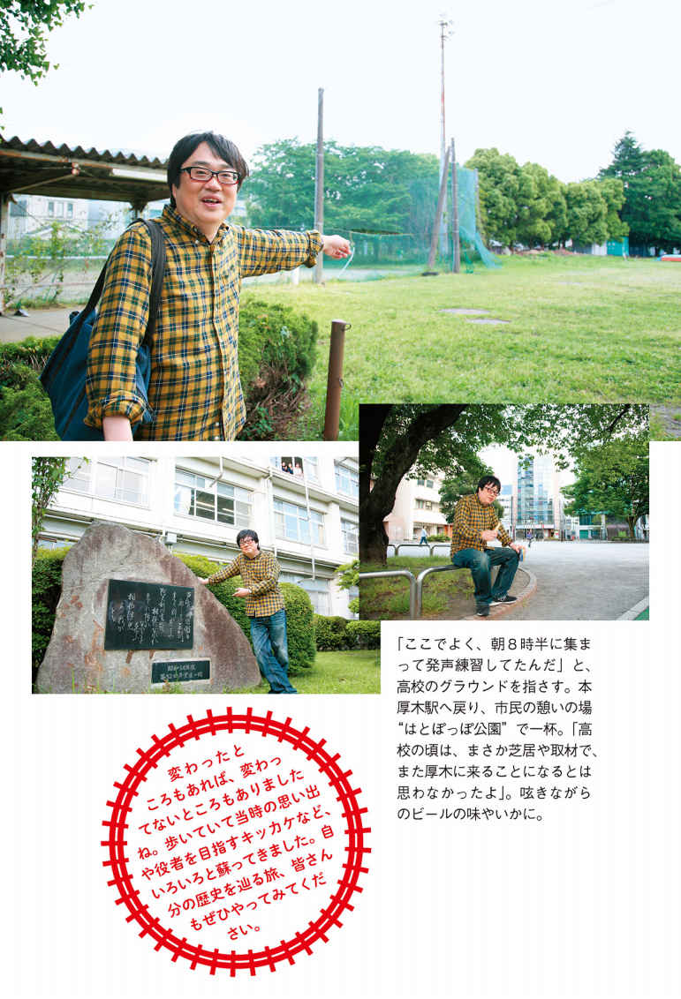
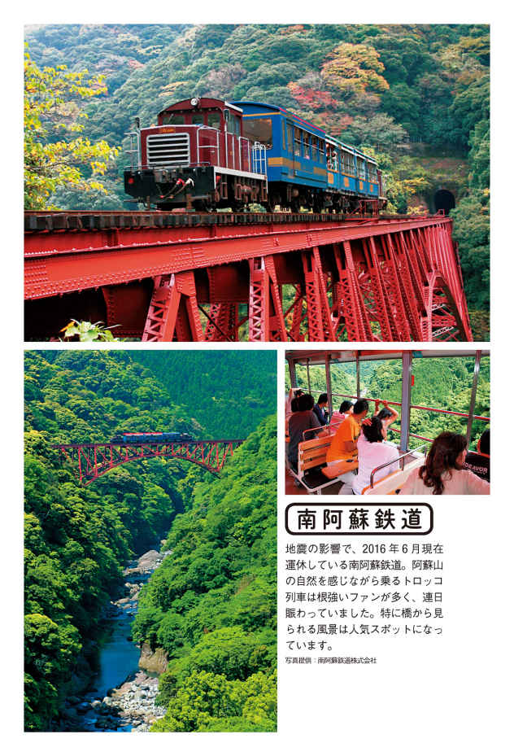
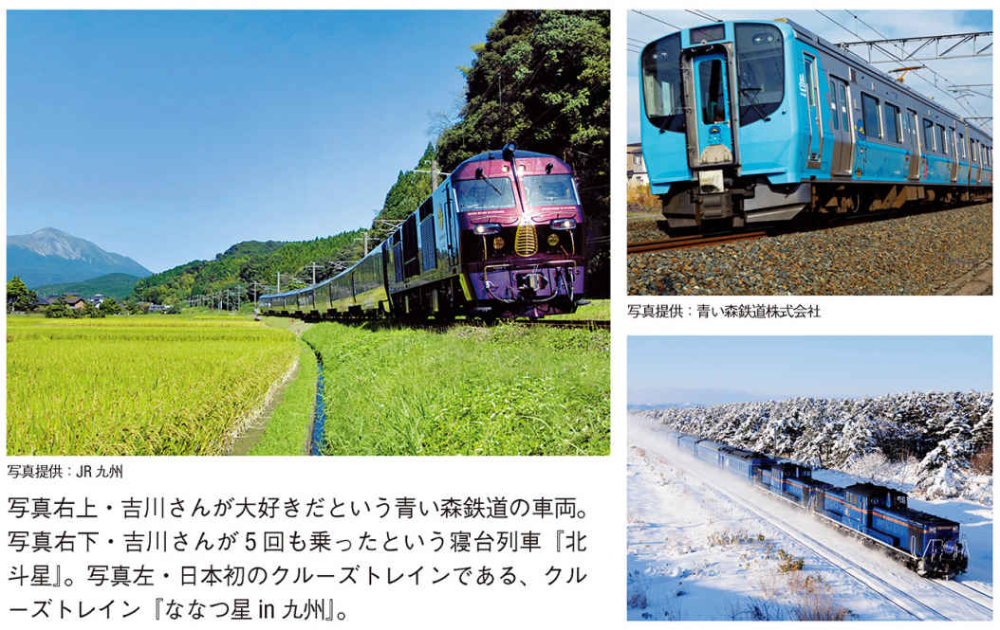

| 六角精児「呑み鉄」の旅 | |
| 六角 精児 | |
| 世界文化社 (2016) | |
六角精児です。この本では、僕のこれまでの人生のなかでプライベートや仕事で乗ってきた鉄道路線の思い出を振り返りながら、印象的な列車、車窓風景、旅先での出来事や出会い、呑んだ酒、食べものなどを綴っていきたいと思います。読者の皆さんには楽しんでいただきつつ、旅の参考にしていただければ幸いなのですが、本題に入る前に、鉄道旅行に旅立つ際の僕の気持ちを伝えたいと思います。
まず、これは皆さんと同じだと思いますが、旅の目的は基本的にリフレッシュ。
忙しい毎日から抜け出し、酒を呑みながら日常では見られない風景を眺め、偶然に出会った人と語らったりしていると、自分の気持ちが変化していくことを感じます。ストレスが取れ、身も心もリラックスしていく。その後、また仕事に臨んだとき、
「さぁ、もっと頑張るか」
と、心のなかで呟く自分を感じることが多々あるのです。
僕にとって、旅は生活にメリハリを与える最高の手段なのでしょう。
何度も旅をしていると、いつのまにか、あらかじめ計画を立てて行動しないようになりました。〝何を見て、何を食べて〜〟という予定を一切考慮しないこと。これが旅立つ姿勢として大事なものになってきたのです。
「今日は休みだ。よし、鉄道で旅に出るぞ！」
朝目覚めたとき、思い立ったまま駅に向かい、乗りたくなった列車に乗る。
あらかじめ乗りたい列車があるときは指定席を確保しておく必要もあるので、いつもそうとはいかないけれど、本当はこれが僕の理想の旅立ちなのです。
そして、気ままに降り立った街を歩き、景色や人との偶然の出会いを楽しみ、自分だけの記憶が生まれていく。旅とは、自分だけの記憶を作りに行くものでもあると思うのですが、偶然性が高い記憶ほど、より印象深くなるのではないでしょうか。
仮に心に残る出来事がなかったとしても、〝何もなかった〟こと自体が思い出になると感じています。
鉄道の旅を始めようとする方は、最初のうちは綿密に計画を練るのもいいでしょう。でも、徐々に計画を緩めていけば、予期せぬ出会いや出来事が、思いがけない刺激、癒やしを与えてくれるようになると思います。
さぁ、では僕の数々の思い出の旅に、お付き合いください。
20歳代後半から30歳代前半にかけて、芝居の公演がらみで頻繁に北海道の大地を踏んでいるのですが、振り返ってみると、この地は自分にとって運命の地であるかのような気持ちになります。幾度となく足を運んでしまうのは、そのせいかもしれません。
初めて千歳空港（現・新千歳空港）に降り立ち、周辺の針葉樹林群を眺め北海道に来たことを実感しつつ札幌市内に向かったのは、所属する劇団『善人会議』（現・劇団『扉座』）の公演を初めて北海道で打ったときのことでした。
当時、下北沢の本多劇場が札幌にもありました。ビルの上の小さな小屋なんですが、そこでの初公演は自分が主演する『夜曲』という芝居。それから10年以上の月日が経って、驚愕の出会いが起きます。札幌公演を観てくれた観客の一人が、その後、東映のプロデューサーになり、まさか僕を『相棒』に起用してくれるとは！
プロデューサーは10年以上前の芝居を覚えていてくれて、『相棒』立ち上げの際、僕を２時間ドラマに使ってくれたわけです。最初に話を聞いたとき、本当にびっくりしたなぁ。
たまたま観てくれた芝居の主役が自分だった偶然もあるけど、それが10年以上先に仕事につながり、今なんとか役者の世界で生き残れているという現実。やっぱり、何事も一所懸命やっていないとダメ。やっていれば何か驚くようなことが起きるかもしれないんだと、身に染みて思っています。
初の札幌公演の打ち上げで、札幌グルメを初体験したのは当地発祥の居酒屋『つぼ八』。焼き魚のホッケが旨いだけじゃなく、東京の居酒屋でお目にかかったことがないほどデカかったのにびっくり。じゃがバターも濃厚なバターを使っていて、もっぱら家でマーガリンばかり食べていた舌には新鮮でした。初めて北海道に行く方にはホッケ、じゃがバターは北海道の旨いもののスタート地点として推奨します。
最初の公演の評判が良く、すぐにまた北海道に行くことになりました。岩見沢、美唄、滝川あたりの札幌近郊の街に足を印す芝居の旅だったのですが、苫小牧公演の翌朝、急行『はまなす』に乗ったのが道内初の急行乗車体験だったと思います。今はなき『はまなす』はＢ寝台車と座席車を備えた客車列車で、前夜、青森を出発し早朝の札幌に着く。その自由席に苫小牧から朝５時頃乗り込み、ディーゼル機関車が牽引する心地よい揺れと、千歳周辺の雄大な景色、早朝ならではの空気感を楽しみました。
現存する道内の路線は地下鉄や市電も含めすべて乗っているのですが、特急にしろ各駅停車にしろ、最初から最後まで乗りとおしたらとにかく時間がかかる。その代わり、車窓の楽しみどころもたくさんあるのが北海道らしいところです。
車窓と車両、両方おすすめの列車といえば、特急『オホーツク』。札幌と道東の網走を結ぶディーゼル車１８３系の特急ですが、乗車時間５時間以上。もう「まだ着かないのか！」と叫びたくなるほど乗せてくださる（苦笑）。
しかも、旭川から東の石北本線の非電化区間は線路の状態も高速走行向きではないし、山間部が多いのでひたすらスロー。十勝地方の石勝線などから見えるような雄大な山ではなく、険しく深い山がどこまでも続くなかを〝ウゴゴゴゴゴ......〟と、エンジンが息を切らせながら走る。思わず「がんばれよ！」と応援したくなるほど。何もない山中の景色に絶望感すら感じながら、たまに現れる秘境駅のかすかな人の気配に、こっちは乗ってるだけなのに安堵してみたり......。
「真冬、こんな秘境駅にふらっと降りたら、俺はどうなってしまうのだろうか？」
「厳しい自然と寒さのなか、ここに線路を敷いた人々の気持ちはいかがなものだったのだろうか？」
などと思いを巡らせていると、突然、景色が開け大きな街・北見が顔を見せる。この展開にも圧倒されます。
『オホーツク』を乗りとおすと、一般的な特急、まして新幹線に乗りなれた身には「こんなところがあるのか」と信じられない感覚に陥るでしょう。同時に、北海道を開拓した人々の苦労とたくましさも多角的に感じさせてくれる。
「あぁ......北海道ってこうなんだな」
心底、北海道の大きさを体感できるのが石北本線と『オホーツク』なのです。
以前、嫁さんと一緒に『オホーツク』で旅をしたことがあります。飛行機で新千歳空港へ。札幌に入り、すすきので有名なジンギスカンの店『だるま』で舌鼓。翌日、『オホーツク』に乗り網走。そして釧網本線の各駅停車で知床斜里へ。ここは世界遺産・知床半島巡りの拠点となる駅です。さらにバスでウトロに向かい一泊しました。
帰路は飛行機利用。この地域の最寄り空港は女満別空港になるのですが、アクセスするには網走や北見といった大都市（といっても東京の感覚からするとかなり小規模ですが）からバスで向かうのが一般的です。
でも、地図を見ると石北本線の女満別駅から空港までは充分に歩いて行けるようなので、急に行ってみたくなってバスと釧網本線で網走に戻り、石北本線でふた駅進んで女満別駅へ向かいました。この駅はバスも通ってるし特急『オホーツク』も停車するので秘境駅とは言えませんが、大きな空港に徒歩で行ける駅としては、日本でいちばん秘境ムードが漂う貴重な駅だと言えるでしょう。
徒歩で空港へ向かうあいだ、北海道ならではの、じつにダイナミックな景色を楽しめます。この徒歩ルートは道路もまずまずしっかりしてるし、冬場でも多少の雪なら心配ないと思われるので、旅に変化をつけるにはぴったり。途中にパチンコ屋があって、時間つぶしに打ったらけっこう出たのもいい思い出ですな（笑）。
道東にはけっこう多く足を運んでいて、その後、再び足が向いて女満別空港への徒歩ルートを辿ってますから、個人的にかなり気に入ってしまったようです。
道東を代表する釧網本線には知床半島のみならず、川湯温泉という素晴らしい温泉地の駅もありますから、どうしても何度となく行ってみたくなります。釧網本線も車窓の見どころが多く、なかでも、網走から知床斜里あたりまでのオホーツク海沿いの景色は圧巻でしょう。
網走を出発してまもなく左手にオホーツク海、右手に濤沸湖が寄り添う区間がありますが、まるで海の上を走っているかのような錯覚を覚えます。また、そのあたりに原生花園という夏季（５〜10月）のみ使用できる小さな駅がありますが、ここもいい。小清水原生花園の最寄り駅だそうで、僕は降りたことがありませんが、一度は降りてみたい駅ですね。降りずとも、夏の深い緑の上に可憐な花が咲く車窓からの景色は充分に素敵ですが。
道東の車窓といえば花咲線も欠かせません。花咲線という名前は根室本線の一部、釧路と根室の区間を呼ぶ愛称で、根室の名産である花咲ガニを連想させます。そのまんま〝花咲〟という美しい名前の駅もあったのですが、残念ながら本年（２０１６年）３月で廃駅になってしまいました。
圧巻の車窓はその花咲駅があったあたり。釧路方面から行った場合、右手の車窓に目を凝らしていると、切り立った海岸の大きく険しい断崖絶壁と遭遇します。自然の力の迫力を感じるだけでなく、周囲は霧が出やすい一帯なので、なんとも幻想的な雰囲気すらあるのです。
釧路から根室に向かうと、最初に都会的な生活感を感じられる駅は厚岸。というか、釧路と根室を除くと花咲線内で街らしい街はここだけ。いつだったか、停車中に窓を開けていると昆布の香りが漂ってきました。海と厚岸湖をたたえる厚岸の街は、牡蠣が豊富に採れることでも有名です。
昆布と牡蠣。道東の大自然からなる潤沢な栄養分を含んだ数々の川の水が海や湖に流れ込み、我々の食生活を彩ってくれていることを実感しつつ、列車は湿原のなかを走行していきます。道東の湿原といえば日本最大の釧路湿原が有名ですが、ここは別寒辺牛湿原という、なんとも珍妙な名前の湿原。
沼と言っていいのか川の一部なのか......水と陸地が半々に入り組んだ地帯を、曲がりくねりながら走る列車から見る景色。釧路湿原の雄大さと逆に、こぢんまりした箱庭のような美を備えた別寒辺牛湿原。このあたりも花咲線の車窓ハイライトでしょう。列車内から視認できませんが、近くには霧多布という道内五番目の広さの湿原もあるので、いつか道東湿原巡りをしてみたいものです。
一昨年（２０１４年）、花咲線の終点、これ以上先に線路はないという最果ての地・根室への旅をしました。短い休みが取れたので六角精児バンドのギタリスト・江上徹君を誘って、急遽、夜の羽田空港へ向かい飛行機で新千歳空港に降り立ちます。
もう根室方面に向かう列車はないので、はなから新千歳空港内に泊まるつもり。翌朝早く旅立つのでホテル泊はもったいない。狙いを定めたのは構内にある『新千歳空港温泉』という温泉施設。いわゆるスーパー銭湯ですが、ここのリラックスルームがすこぶる過ごしやすいので、ひと風呂浴びて一泊するつもりで来たわけです。清潔で広い空間に並ぶテレビ付きの椅子は、非常に深くリクライニングしてくれて熟睡可能。入館料に深夜料金１５００円を追加するだけでここで眠れる（朝食つき）のだから、鉄道乗り継ぎ旅行者には至れり尽くせりでしょう。
翌朝、新千歳空港から南千歳駅へ。釧路行きの特急『スーパーおおぞら』に乗車します。釧路まで４時間（札幌発の場合）かかりますが、高速走行可能な石勝線内も走るので、道内の気動車特急としてはかなりの速さを感じます。特急『オホーツク』と比べると、乗り心地もずっと快適。『オホーツク』のような無骨な乗り心地の列車とは違う、洗練された魅力のある特急なのです。
釧路から花咲線に乗り継ぎますが、特急はありません。快速列車はありますが、それほど多くの駅を飛ばすわけでもなく、車両も各駅停車と基本的に同じだから、あまり得した気分にはならず、どちらにせよ根室まで２時間超のゆっくり旅となります。『スーパーおおぞら』のスピード感とのギャップを味わいながら根室着。日が暮れてからの楽しみは、もちろん酒とメシ。というわけで、鄙びたスナック街へ。
旅先で見知らぬ街のスナックを訪ねることは、大きな楽しみなのですが、特に根室のような港まちのスナックを訪ねるのは大好きなのです。海の幸もいい、人との出会いも非常にコクがあって味わい深い。そんな気がします。
港まちというものは、漁業が行われる海岸から内陸へと坂を上る形で成り立つのが常。坂道の一角に小さなスナックが寂しげにネオンを灯している......そんな風情ある街に溶け込んでいくと、漁師が獲った海産物がスナックや居酒屋で地元の方々によって消費され、地域経済が循環していることも実感でき、自分がその街の住人になったかのような気分になってくるから不思議ですな。
ここ根室は時期的なものなのかもしれないけど、スナック街の賑わいはナシ。やはり不景気なのでしょう。ただ、街なかには昆布の香りが漂い、新鮮な昆布料理を堪能できること確実な予感。
「どこにしようか？」とスナックを物色。『ペケペケ』という店名のユニークさに惹かれ、扉を叩きました。
カウンター席に腰を下ろし、最果ての地に乾杯。さっそくビールを流し込みます。続いて喉を潤したのは......この夜、しこたま呑んでヘベレケになったので記憶が定かではないのですが、しそ焼酎の鍛高譚だったはず。
この焼酎は北海道のスナック、居酒屋では大定番。ほぼ、どこの店でも遭遇するので毎度お世話になっている大好きな焼酎であります。大雪山系の水を使ってるそうで、しその爽やかな香りに釣られて何杯も呑めてしまうのです。
「おいしい昆布がありますよ」
こちらの心中を見抜いたかのようなママのひとこと。「待ってました」とばかりにお願いします。
出てきたのは普通の昆布ではなく〝さお前昆布〟なのだから「おぉっ、やった！」とばかりに気分は上々。
さお前昆布とは当地の名産品で、成熟する直前の若々しい昆布を早めに採ったもの。６月頃が旬で、非常に柔らかいのが特徴です。さお前昆布の刺身、煮つけを肴に鍛高譚の水割り。最高の気分でママとの会話がはずみました。
話によると、ママは昼はどこかの給食の配膳仕事、夜になるとスナックをやっているそう。娘さんは高校生くらいなのかな？ 今は子育てに手がかからなくなったそうですが、たぶん女手ひとつで育てられたんだと思います。最東端の地で必死に働き人生を重ねていく女性のたくましさに敬意を表しつつ、もっと根室の人々を知りたくなった我々は、さらなる出会いを求めて店を出ます。
すると、スナック街のいちばん奥に『まゆみ』という店を発見。スナックに通っているとわかるのですが、僕好みな渋い雰囲気のスナックには女性の名前が付いていることが多くて、ハズレが少ない。迷わず扉をノックしました。
第一印象は強烈。かなり年配のお婆さんがカーテンのような服を纏って座っている。これは濃厚な話が聞けそうだとワクワクするってものです。どこのスナックに行っても「なぜ、ここでスナックやってるの？」と、尋ねることから会話が始まるのですが、ママはもともと釧路にいたそうで、いろいろあって根室でスナックを始めたのだそう。
「ふーん、どうしたの？」と突っ込めば、幼い頃、父親が騙されて事業に失敗し、ママはまともな教育も受けさせてもらえなかった。釧路でやってたスナックもうまくいかず、流れ流れてここにいる......と。
そんな話を聞き、それでも元気に接客する気丈な姿に接して、なんともいえない気持ちになった我々は、北の酒と肴でひたすら酔うしかない。慣れないカラオケも江上君と共に熱唱しまくって、他に誰も客の来なかった『まゆみ』をあとにしたのでした。
チェックイン済みのホテルへの帰路は、凄まじいまでの千鳥足。完全にホテルの場所を忘れてしまった我々が、どうやってホテルに辿り着けたか、まったく記憶がありません。
ディープな夜が明け、午前中に再び花咲線で釧路に戻り、東京へ帰る時間が迫ってきます。
「せっかく根室に来たんだから、花咲ガニ食ってから帰りたいよなぁ」
自然とそんな話になり、駅前で店を物色。〝花咲ガニ〟と書かれた看板のある食堂（のような店）に入り注文すると、ゆでて真っ赤な花咲ガニが皿の上に無造作に置かれて、ポンと出てきました。
「朝メシだし、ごはんも食いたいな。ないのかい？」と尋ねると、
「ごはんはないから隣のスーパーで買って、持ち込んで食べてくれよ」とのこと。
隣のスーパー（のような店）に行くと、お湯を入れるだけで食える生麺の天ぷらそばがあったので、それを購入し花咲ガニのお供に。問題の花咲ガニですが、さすがに旨かったねぇ。１杯、１８００円だったかな？ 季節的に良かったのかもしれないけど、非常に安い価格に感心していると「六角さん！」と呼ぶ声が。
なんと、昨夜のスナック『ペケペケ』のママの姿。
「あれっ、どうしたんですか？」
「さお前昆布、お土産に持ってきたのよ。ふたりがあんまりにも〝旨い、旨い〟って言うもんだからさ（笑）。たぶん、この時間の汽車で帰るんじゃないかと思って」
お礼を言ってありがたく頂戴し、いつの日か『ペケペケ』で再会する日を楽しみに、正確に言えば汽車ではない気動車に乗り込みます。
最果ての地の女性はどこまでもたくましく、女性ならではの包容力にあふれていたのでした。
六角精児バンドのギタリスト、江上徹君とはこの根室行き以前にも北海道を旅したことがあります。ある夜、ふたりで明け方４時まで呑み、酔ったいきおいで、
「明日（というより今日ですな）どっか遠くへ行こうか。朝７時に下北沢の駅前で待ち合わせな」と、示し合わせて別れました。
「あいつ、まさか来るわけないよな、来なかったら家に帰ればいいや......」
そんな気分で酔っぱらったまま駅前に立っていると、奴は本当に来てしまった（笑）。
「今は酔ってベロベロでどこに行くか考えられないから、とりあえず羽田空港に行って、サイコロ振って出た目でどこに行くか決めよう」
空港ロビーに着き、サイコロの目が奇数ならＡＮＡ、偶数ならＪＡＬの便に乗ると決め、出た目の航空会社のカウンター方向へ。次に、奇数か偶数かで北に行くか南に行くかを決めると、北へ行くことに。さらに、出発便の案内板を見て、上から何番目の飛行機に乗るかをサイコロで決め、結果、新千歳空港へ飛び立つことになりました（苦笑）。
文字どおり酔狂な展開で機上の人となり、熟睡の果てに北海道到着。着いたはいいが、この先どうすべきか......。
「どこへ行こうか？」
「とりあえず、おまえレンタカー借りろよ」
江上君の運転で出発します。すると昼も過ぎて酔いが覚め、やっと〝大変なことになった〟と気づいた次第。
東京は半袖で過ごせる気候だったけど、北海道はとても寒かった。薄着のまま来てしまったことを後悔するばかりか、なんの予定も計画もないという現実。どうしたものかと札幌方面へ車を走らせていると、理由は忘れてしまったのですが、なぜか増毛に行くことになりました。
札幌市内を抜け、石狩湾沿いを北上。途中、やたら塩味のきつい海鮮ラーメンを食べつつ増毛町内へ入ったのですが、車を降りると新千歳空港よりさらに寒い。宿をおさえておこうと民宿に電話しても、シーズンオフで取り付く島もない。
「しょうがないから、ニシン漁で栄えた増毛の歴史を観ようじゃないか。博物館に行こう」
というわけで、入場無料の博物館でニシン豊漁時代の喜びにわく写真などを眺めたのですが、我々はまったく笑顔になれない。でも博物館のおじさんに「宿はないか？」と聞いたら親切にも宿探しに協力してくださり、ようやくガソリンスタンドの人に紹介されて宿をとることができました。
ひと安心して街へ。増毛は日本最北の酒蔵と言われる国稀酒造があることでも知られています。酒呑みふたりは当然のごとく酒蔵へ。すると、やたら肌艶のいい女将さんが「あれ呑め、これ呑め」としきりに試飲をすすめてくる。女将のノリに任せて空きっ腹のまま呑んでたら、朝と同じヘベレケ状態に逆戻り（笑）。味の記憶喪失です。
ところが、後にＮＨＫ‐ＢＳの番組『六角精児の呑み鉄本線・日本旅』の仕事で再訪したので、こんどはゆっくりと酒を味わうことができました。
国稀酒造の日本酒の味は、ひとことで言うと非常におだやかですな。酒にとって水が重要なのは当然ですが、増毛の水はとてもおだやかな雪解け水。キリッとした水の土地ではキリッとした酒になるし、能登半島のようなモチッとした水ならモチッとした酒になる。また、増毛あたりの石狩平野は北海道のブランド米の産地でもあって、米もとても美味しいからいい酒が生まれるんでしょう。
かつて、北海道の大地は米作に適さないとされていましたが、長年の努力による開墾と研究・改良を重ねてブランド米を世に出し〝ゆめぴりか〟などは全国的に有名です。昔、川がよく氾濫するから、川の流れを曲げる工事をして田んぼを作っていったそう。そんな話を聞きながら呑む国稀酒造の酒は、ひときわ味わい深いものがあったのです。
北海道内を走る長距離特急は札幌を起点に函館、釧路、網走、稚内へと四方向に延びています。そのなかで、北海道新幹線開業にわく函館を目指す『スーパー北斗』と『北斗』は華やかなイメージを帯び、列車本数も多いのですが、忘れちゃいけないのが稚内を目指す『スーパー宗谷』と『サロベツ』。札幌から旭川までは『オホーツク』と同じく函館本線を走りますが、その先の新旭川で石北本線に入る『オホーツク』と分かれ宗谷本線を北上します。札幌〜稚内間で５時間超、途中の旭川からでも３時間超。さすがに北の最果ては遠いですな。
『スーパー宗谷』の旅を満喫したのは数年前の年末年始。なかなか厳しい旅になるとは予想せず、指定席の予約なしに、嫁さんと一緒に飛行機で北海道入りしたのは大晦日のことでした。最近、年末年始のスケジュールが空く時期に旅をすることが多いのですが、指定席の予約をせずに行くのが僕のスタイル。
撮影の仕事が終わって「鉄道に乗りたいな」と思ったら、すぐに行くのが好きなので、予約とか予定とか、あまり考えず、乗れるときは乗りまくる主義なのです。
旭川空港から旭川駅へ。宗谷本線の快速『なよろ』・キハ40系にコトコトと揺られ名寄駅へ。そこから各駅停車を乗り継いで稚内へ。特急一本で行くより遥かに時間はかかりますが、景色をじっくり味わえる贅沢な時間の使い方こそ、鉄道旅行の醍醐味なのです。
この旅では立ち寄っていないのですが、名寄と稚内のあいだ、途中駅の音威子府には名物の立ち食いそば店があり、ぜひ紹介したいと思います。なんと、駅のある音威子府村は道内でいちばん人口の少ない村で、村民数は千人を下回るとか。かつて、天北線が分岐していた音威子府駅は乗り継ぎ客が多く、立ち食いそば店が繁盛したのですが、人口が減少し、天北線が廃止された今でも〝常盤軒〟という店が健在なのは、旨いからなのです。
列車本数が少ないため、客のほとんどが車でやって来るという常盤軒。真っ黒で風味豊かな田舎そば。店に立つのは腕利きの老夫婦。貴重な名店を末永く続けていただきたいと願わずにいられません。
稚内に着いて、ふと立ち寄った地元のスーパーで〝ダブルラーメン〟というインスタントラーメンを買いました。聞きなれない名前でしょう？ 普通の袋麺なのですが、北海道限定商品で東京では売ってないのです。もちろん、ホテルで作って食べるのではなく自分への土産。インスタント麺好きとしては、地方限定品と出会うのも旅の楽しみのひとつです。
ロシア語の看板も多い稚内の街を散策していると、船のターミナル港に出ました。ここから、利尻島や日本最北の離島・礼文島へ行く船が出ている模様。今回は時間がないので離島を楽しむことはできないけれど、またいつか足を運んでみたいと思いつつホテルへ。
のんびり一泊した翌日は『スーパー宗谷』で旭川へＵターン。雄大なサロベツ原野、天塩川と寄り添う渓谷の美しさ、サイロを背に乳牛が草をはむ牧場......あっというまの３時間で旭川着。自然美にあふれた景色を焼き付けた目に、旭川の街なみは大都会のよう。今宵は夫婦で旭岳温泉泊まり。正月らしいといえばらしいけど、翌日もまた、鉄道乗りっぱなし旅は続きます。
旭川から特急を乗り継ぎ、札幌経由で函館へ出て一泊。乗り心地のいい特急が続くとはいえ５時間を超える乗車。僕としては〝乗れるときに乗りまくる〟ことが目的の旅だからいいけれど、ほとんどの夫婦はやらない旅でしょうな。
隣の席で、病人のようにずーっと寝ている嫁さんは、正直つまらなかったと思います（苦笑）。正月なので街なかの飲食店はやってない。三泊とも朝・夕食はホテル内で済ませ、昼食は駅売店のパン。そしてひたすら車中の人となる旅。僕はそれでかまわないとはいえ......。
函館での朝を迎えたのは１月３日。この年は１月５日からドラマの撮影があったため、今日のうちに自宅に帰って撮影に備えておきたい。土産の購入もそこそこに函館駅へ急ぎます。当時、まだ北海道新幹線は開通していないので、青森までの津軽海峡線は特急『白鳥』に乗車。
函館駅のホームに立つと、お目当ての『白鳥』は帰省客でいっぱい。それまで「なんとかなるさ」と気楽な気分だった僕の読みは甘く、かろうじて嫁さんは座れたものの、僕は青森まで立ちっぱなし。続く、新青森から東京までの東北新幹線はさらに混んでいて、ふたりそろって３時間の立ちっぱなしとなりました（苦笑）。
やっぱり、年末年始の繁忙期は指定席をおさえておいたほうが安心ですな。まぁ、それでも僕はまた、何も予約することなく乗りまくる旅に出るんでしょうけれど......。
北海道の鉄道を語るうえで外せない出来事が、今年（２０１６年）の３月26日にありました。新青森から新函館北斗まで新幹線路線が延伸し、北海道新幹線として開通。１９８８年に開通した青函トンネルに、ついに新幹線が走るようになったのです。
北海道新幹線の話に触れる前に、少し函館の思い出話を。20年以上前のことですが、函館のイカ釣り漁船に乗せてもらったことがあります。
ある夜、たまたま入った居酒屋の主人と話していたら仲良くなり「イカ釣り漁師もやってるから、明日、船に乗せてあげるよ」と。喜んで乗せてもらったのですが、驚きました。目の前でイカがボコボコ釣りあげられ、その場で酒の入った樽にぶち込まれる。いわゆる〝イカの沖漬け〟を獲った瞬間から作り始めてしまうわけ。「こうやって作ってるのか」と、非常に感心した次第です。
なんといっても函館の旨い酒の肴の代表はイカ。イカの沖漬けで一杯やるのは最高ですな。
初めて函館に着いたとき、居酒屋でイカの刺身を前にしたときの驚きも忘れられません。イカといえば白い色をしてるもんだと思ってたのに、それまでに見た刺身と違って色が黒っぽい。それでいて透明感がある。食べてみたらコリッコリの歯ごたえ。あの旨さとコリコリ感は未だに覚えてます。もちろん、イカは干物もいい。缶ビール片手に干物をかじりながら函館本線を北上、線路スレスレに迫る大沼。その絶景を眺める......たまりませんなぁ。
では北海道新幹線の話を。北海道のテレビ局の仕事で開業初日に乗ることができたのですが、現地でさまざまなことを感じました。
まず、一本の列車で長いトンネルをくぐり海を越えて北海道に渡ることは、陸続きの本州内を移動するより遥かに到達感がある。もちろん飛行機では味わえない、４時間かけての到達感。〝平成版はるばる来たぜ函館〟気分、鉄道ならではの感覚を、ぜひ皆さんにも味わってほしいと思いました。
そして、現実には繁忙期以外の乗車率は高くないでしょうから、もっと観光客に来てもらうために道南地域の素晴らしさを、より強く道民から発信していってほしいと北海道新幹線を応援する立場で感じました。
函館から少し離れた場所にも観光地はたくさんあります。松前城の桜、美しい大沼公園や駒ヶ岳......函館に来やすくなった分、その先や途中の名所や文化に触れるための移動時間もとりやすいわけです。もっと道南の魅力を伝えていけば、多くの観光客が来てくれると思います。そのためには新たな周遊きっぷを発売するとか、観光列車の設定とか、ＪＲ北海道の頑張りも大切ですが。
北海道新幹線開通に伴って、五稜郭〜木古内のＪＲ在来線区間が第三セクター、『道南いさりび鉄道』になりました。この区間を高架上の新幹線で通ると、スピードが速いから車窓を楽しめるとは言えません。でも、『道南いさりび鉄道』なら津軽海峡の美しさを車窓から堪能できる。
例えば、新幹線で函館に入り〝いさりび〟で観光しながら木古内へ戻る。木古内を拠点としたバス観光ルートを設定して松前などに足を延ばす。一泊することを前提にすれば、奥尻島に渡ることもできるでしょう。同様に、函館から北に向かった七飯や大沼公園を拠点とした観光ルートも面白いと思う。〝待ちに待った新幹線〟なのだから、地元企業や旅行代理店が協力し、ルート開拓してほしいですね。
実際、木古内駅前には道の駅ができて、新しいレストランでシェフが腕を振るっていました。昔ながらの駅前食堂もいいですが、新しい食文化を生み出すことも大事。そうした積み重ねが発展につながってほしいと願います。
いつのまにか、世間に〝六角精児は旅好き、鉄道好きである〟ことが知られてきたためか、ときおり「好きな駅弁は何ですか？」と、質問されることがあります。
気の利いた返答をしたいところですが、残念ながら旅先で自ら駅弁に手を伸ばすことはありません。嫌いというわけではなく、長年の役者生活で食べ続けた〝ロケ弁当〟三昧の反動で弁当という形のものに食指が動かないんです。日常的に弁当を食べているため、旅に出たときは違うものを食べたくなるわけですが、もっとも、列車に乗るときの酒のつまみは、どうしても家でもつまんでる〝根っから好きなもの〟を選ぶので、それも日常といえば日常なんですが。
旅立ち前に酒とつまみを調達する場所は、もっぱら駅のコンビニ。都会を離れて地方の無人駅に降り立ち、どこを探しても酒を買えなかった経験もあって、必ず都会の駅で購入し持ち歩くようにしています。酒の定番はビール、チューハイ、ウイスキーのハイボールなど。基本的に缶入りです。
つまみは、大好きな〝練りもの〟や〝乾きもの〟が主役。なかでも、いわゆる〝チーかま〟（チーズ入りかまぼこ）は欠かせません。
昔、満足に食えなかった時代、わずかな金もギャンブルで溶かし、年末年始、チーかまだけで過ごしたこともあります。今もよく食べてるし、僕の体の半分はチーかまでできているんじゃないかと思うほど好きですな。他に非常に好きなのはベビースターラーメン。子供の頃からジャンクな菓子類が好きでした。加えて、サラミやイカの燻製、魚肉ソーセージなどを買って列車に乗り込めば準備は万端。
最近、出会うことが減る傾向の車内販売から、あらかじめ買うものを決めて乗車することもあります。おすすめなのは、東北新幹線内で売られているホヤの干物。小さな箱に入ってるのですが、初めて見たとき「キャラメルの箱かな？」と見間違えたほどのかわいらしさ。とても風味豊かで、ビールに合うホヤです。
東北新幹線に乗った気分になりかけたところで、東北の旅の話をしましょう。
頻繁に北海道の端っこへ足を運んでしまう性分なので、本州の最果て・青森にもよく足が向きがち。東北といえば、どうしても北端・青森を中心とした記憶が蘇ります。
特に好きなのは五能線。青森県の川部と秋田県の東能代を日本海の自然に包まれながら結び、臨時運行の観光列車・快速『リゾートしらかみ』以外に直通する列車がないローカル線。各駅停車で走破するには度重なる乗り継ぎが必要な、たっぷり５時間の鈍行旅。過去、３回ほど堪能しました。
東能代から乗ると車窓右手に白神山地、左手に日本海の絶景が延々と続き、深浦あたりで海の色合い、波の紋様がスッと変わる。津軽海峡の色になるんです。同時に岩木山が顔を見せ、徐々に陸地の景色も変わっていく。
そんな車窓は本当に素晴らしいのですが、こういった話をすると、
「長時間、列車に乗って飽きませんか？」と聞かれることがあります。
飽きてもいいと思うのです。
もし飽きたら目を閉じて眠ってしまえばいい。ゆっくり流れる時間の下、心地よい気動車の揺れに身を任せていれば寝るのはたやすいですから。
ふと目が覚めたとき、
「あぁ、俺はまだ列車に乗っている。しかも、まだ同じ景色が続いている」と確認した瞬間、僕は幸せを感じます。そしてまた酒を一杯。これこそ、呑み鉄の醍醐味ですよ。
五能線の旅に潤いを与えてくれる素晴らしい温泉が、深浦町にあります。艫作という難読駅を最寄りとする黄金崎不老不死温泉、みちのく温泉の２ヶ所。どちらも徒歩十数分で行ける名湯。おすすめです。
日本海の絶景を望む露天風呂が有名な黄金崎不老不死温泉には『不老ふ死温泉』という名の一軒宿があり、日帰り入浴もできます。海岸に面した露天風呂へ行くには宿から浴衣一枚で歩くので、寒い時期は「こりゃ、ほとんど罰ゲームだな」という気分に。非常にしょっぱい茶褐色の湯の温度はぬるめなので、なかなか湯から出られなかったのもいい思い出ですな（苦笑）。
おすすめしたい深浦名物の珍味があります。
〝あわびのウロ漬け〟というもので、ウロとはあわびの肝のこと。塩で漬けた、いわゆる塩辛の類。ビジュアルはイカの沖漬けのような感じで、かなり濃厚な塩味です。
深浦出身の知り合いから、
「あそこに行ったら、ぜひ食べたほうがいいよ」と、推奨されていたので、宿で「ぜひ食べさせてほしいんですが」と、朝食のとき特別に追加してもらいました。朝からビールが進んじゃって困ったねぇ（苦笑）。
あわびの身ではなく肝だから、そうとう新鮮な肝じゃないと作れないはず。
肝とはいえ、あわびの一部なので値段が心配になりますが、意外と手頃な価格で買えます。ホカホカのごはんにのせて食べるのも旨いでしょう......いや、舌をくすぐるしょっぱさは、酒の肴にすべきです。そのほうが〝ウロ漬け〟も喜びそうな気がしますな。
呑んで、食べて、乗りまくって......そんな旅をする六角精児のイメージは間違いじゃないのですが、じつは温泉も好きでよく足を運ぶのです。温泉はまさに旅のオアシス。旨い酒と肴と湯で極楽気分にしてくれる鄙びた温泉地へ向かう回数は、齢と共に増えてきました。
青森県の温泉でいちばん好きな温泉は酸ヶ湯温泉。青森駅からバスで１時間かかる八甲田山中の温泉で、豪雪地帯であることでも知られ、よく天気予報でも名前を聞きます。ピンときた方もいるでしょう。ここの大きな一軒宿には、なんとも味のある総ヒバ造りの千人風呂があり、完全に湯治場のムード。渋く、風情ある雰囲気。ぬるっとした湯に何時間でも浸かっていたい気分になりました。
下北半島、むつ市大畑にある薬研温泉もいい具合に鄙びた温泉地です。ＪＲ大湊線の下北駅からバスで30分のアクセスですが。途中、２００１年に廃止された民鉄・下北交通大畑線の終点、大畑駅の跡地にバスは停車します。停留所の目の前に大畑線で使われていた車両が眠っているであろう大きな車庫があり、鉄道好きなら誰しも「なかに入ってみたいなぁ」と呟くことでしょう。鉄道遺跡と共に楽しむ温泉巡りもいいですなぁ。
下北半島方面へ向かう際の旅の拠点は八戸。この地の酒蔵、陸奥男山で知られる『八戸酒造』を訪ねたことがあります。陸奥男山は県内の居酒屋で定番の日本酒で、すっきり系でもまったり系でもない、その中間のような日本酒らしい日本酒。素直に美味しいと感じました。
いろいろな酒を試飲しているうち、例のごとく酔ってしまったのですが、陸奥八仙という酒も非常に旨く、暑い季節向けに炭酸を加えたシャンパンのような〝にごり酒〟もいい喉越しでした。国の登録有形文化財である重厚な歴史の酒蔵から多様な酒を送り出し、新たな日本酒文化を発信している八戸酒造なのです。
青森県内で呑み歩いた記憶といえば数ありますが、わりと最近、青森市内で呑んだ一夜は、面白くも胸を打つものがありました。
青森駅近辺で〝味噌カレー牛乳ラーメン〟（本当にありますよ）などで腹ごしらえし、繁華街からタクシーで少し行くと、突然現れる歓楽街があります。
「渋いスナックはないか？」と、物色しながら歩いていると、急に声をかけられました。
「六角さんですね。いつも『三角でもなく四角でもなく六角精児』読んでますよ」
声の主は客引きの兄ちゃん。こんなところで『週刊現代』の読者と遭遇してしまいました。
連載を読んでくれてるなら、僕の好きそうな店もわかってくれてるだろうと、さっそく店を訪ねると......。
「スナックですね。こちらへどうぞ」
案内された店は高級感があって、僕の好きなタイプではない。客もいっぱいで落ち着けない。どうやら、今日の青森はどこも賑わってるのか？
ならばと、気分を変え店を出て、再度さっきの兄ちゃんと話します。
「じゃあ今度はさぁ、キャバクラ紹介してくれよ」
入った店は一人２万円くらいかかるキャバクラだけど、雰囲気は本当にのどか。青森の女の子が変に飾ることなく働いてる地元感ある店。近所の普通のお嬢さん、弘前から通勤してるというお姉ちゃんらと会話がはずみます。
面白くも驚いたのは、ほぼ全員の女の子が、一度、東京に出て来ていること。美容やネイルの勉強など、それぞれがやってたけれど、東京に疲れて青森に帰って来ている。
「東京は毎日〝ねぶた祭り〟みたいでやってられなかった」
そんな、彼女たちの言葉には真実味があったねぇ。
青森で生活する息づかいと、東京での息づかいはあまりにも違って、なじめなかったんでしょう。
「そりゃ、お金ほしいさぁ。でも東京はダメだったぁ」
口を揃える彼女たちと話していると、なんとも言えない愛しさが込み上げてくるもの。
明るい話題に変えようと、
「このへんで楽しい場所って、どんなところ？」と話を振りました。
「楽しいところなんてなんもねぇ。でも、ちゃんと生活ができるから私らはここのほうがいいんだ」
地方のスナックで〝東京はどうしたこうした〟系の話をすると、今宵の青森と逆に、
「こんな何もないところじゃなくて、東京に行きたい！」と、力説されることがときどきあります。
でも、それは〝そう言う癖がついてるから言ってる〟ように聞こえて、本音は別のところにあると思うのです。
以前、山口県の極めて小さな温泉地の祭り会場で、地元の女子高校生に声をかけられたことを思い出しました。
「六角さんですよね。この街いいですよね。私、大好きなんです！」
東京から遠く離れた山口や青森の田舎町。若者が東京に憧れないわけがない。それでも「私はここが大好き」、「こっちがいい」と、堂々と言えるのは素晴らしいことだと思います。東京で育った人間には実感しがたいことだけど、しっかりと呼吸できる生活基盤を持つ地元から出てきて、基盤を変え、東京の呼吸に合わせることは本当に大変な作業なのだと痛感した青森の夜。
キャバクラを出た僕は、無性に青森の空気を吸いたくなって、宿までタクシーで２メーターの距離をぶらぶら歩きました。深夜の青森の曇り空はどこまでも深く、どこまでもシーンとしていた。彼女たちの言葉があったからこそ、静寂という名の青森の日常を、初めて味わえた気がします。
こうした旅先での出会いは、旅をいっそう味わい深くする楽しみのひとつ。
僕の〝呑み鉄旅行〟の出会いは、もっぱら行く先々のスナックや居酒屋。列車内でも呑んでることが多いけど、地元の用務客は短区間の乗車で降りてしまうので、会話が生まれても挨拶ていどだし、周囲の乗客への迷惑もあるから、スナックのように盛り上がることはありません。
何度か、長距離旅行中の鉄道ファンに話しかけたり、かけられたこともありますが、どちらかというと地元の人と話したいので、社交の場はもっぱら夜の街なのです。
ただ、津軽鉄道のストーブ列車で関西から旅行に来たご夫婦と少しだけ話したとき、いい雰囲気が生まれたなぁ。
津軽五所川原から、太宰治の生家〝斜陽館〟がある金木をへて津軽中里に向かう民鉄路線。昭和初期のダルマストーブを旧型客車内で使用するストーブ列車のことは、鉄道ファンでなくとも、どこかで見聞きしたことがあるでしょう。
車内でスルメイカの干物を買い、ストーブの上で焼けば、香ばしさだけでビールが進むほど。リクライニングとは無縁な、昔ながらの背もたれが直角な向かい合わせシートに腰かけ、ストーブを囲みスルメを焼きつつ呑んでいれば、無意識に向かいの席の方と乾杯というもの。
〝ゴットン、ゴットン〜〟と響く客車の揺れ。車窓は冬季に地吹雪が起きるという果てしない平野と小さな駅。初対面の方を前にしても話題に事欠くことなし。車内を温めるストーブのせいか、話も自然とぬくもりあるものになっていた記憶があります。
秋田の繁華街では、痛快な出会いがありました。
たまたま秋田駅近くで僕好みな大衆ホルモン焼き屋を見つけ、一人で食べていたら豪快なオヤジと知り合いに。
「それじゃあ、これから一杯いくか」と誘われ、少し離れた秋田一の歓楽街、川反通りの見知らぬスナックへ。そこでのオヤジの話が良かったねぇ。
「俺はこんなに酔っぱらっても毎朝５時に起きるんだ。育ててくれた母ちゃんが年老いたから、俺が朝飯をしっかり作って、それから俺は仕事に行くんだ」
猛烈なペースで豪快に酒をあおるにもかかわらず、話すことは、ひたすら「母ちゃんが、母ちゃんが......」。
半端ない母ちゃん愛にあふれたオヤジが、何度もリピートする話を楽しく聞いていると、突然、「もう11時になったから俺は帰るよ。アンタはもっと呑んでいきな。金は払っとくよ。また秋田に来たら呑もう。電話してくれよ」
威勢よく語り、すくっと立ち上がったオヤジは、より豪快に店を出ていきます。カウンターには金と電話番号を書いたメモ。店内は一変して静寂。
「あぁ、いいオヤジだ......あの豪快さは憧れるな」
余韻に浸りながら、一人で呑み続けたのです。
翌日、お礼を言おうと電話番号のメモを探したのですが見つからない。思えば、昨夜はどうやってホテルに帰ったか覚えてないほどの泥酔。旅に出るとこういう失態がよくあるのですが、旅先で呑み、人と出会うことが心底楽しく感じられた秋田の夜でした。
秋田県には五能線に次いで好きな路線があります。秋田の小京都と言われる角館と県北の鷹巣を結ぶ、秋田内陸縦貫鉄道です。
乗車した季節は真冬。雪の鷹巣からでした。
「最後まで山のなかしか走らないんじゃないか？」と、感じるほど深い山々。クマが出そうな雰囲気すらあります。それもそのはず、道中には阿仁マタギという名の駅もあり〝マタギの里〟を通るのです。全線を貫通する急行『もりよし』もいいですが、１両だけの単行ディーゼル車で乗り継ぐのが、こうしたローカル線に相応しいでしょう。
沿線の皆さんで運営される第三セクター鉄道のため、地道な経営努力が随所に見え隠れするのもいい。社員の手作りらしきグッズを乗客に配り「秋田内陸縦貫鉄道をよろしく」とアピールする姿勢。そんな頑張りも好きな理由です。
同じ秋田県の大館と岩手県の好摩を結ぶ花輪線も好きな路線。岩手側からだと、すべての列車が好摩から６駅手前の盛岡始発なので東北新幹線からアクセスしやすい。乗り継ぎ不要な直通列車も多く、手軽にローカルムード満点な３時間の旅を楽しめると思います。
僕が乗車したときは好摩からの乗りとおし。大館から弘前に出て一泊しました。けっこう前のことですが、非常に楽しかった記憶があります。
年末のある日、全国のＪＲ路線の普通列車に乗り放題の『青春18きっぷ』を使っての旅だったのだけど、ホームに入って来たのがキハ58系だったのは嬉しかったねぇ。キハ58はまもなく花輪線から引退するらしく、最後に一度、乗っておくことができました。期せずして惜別乗車となったという、非常に鉄道ファンらしい思い出です。
クリーム色と赤の〝国鉄色〟でおなじみのキハ58は、僕が物心ついた頃からずっと全国の国鉄、ＪＲ路線で乗ることができました。急行に使われることが多かった車両ですが、そういえば、急行という言葉もＪＲでは聞くことがなくなりましたなぁ......。
キハ58から見た車窓は、日本の原風景というか、いい感じの山間部が多い。ゆ〜っくりと流れていったのです。
もうひとつ、山形県の赤湯から荒砥に至る、第三セクター『山形鉄道フラワー長井線』も好きな路線。
山形県内トップクラスの人気ラーメン店、辛味噌ラーメンが旨い『龍上海』の本店がある赤湯から、行き止まり駅の荒砥に至るフラワー長井線は、途中駅の今泉でＪＲ米坂線と出会います。気動車しか乗り入れない架線のないローカル駅で、会社も形も異なる２種類の気動車が並び、油煙をあげて停車している光景を目の当たりにすると、鉄道が主たる交通手段だった時代にタイムスリップしたかのよう。
「この光景は渋い！」
気持ちが一気に高ぶったのです。
車両は新しくカラフルになったけど、往年の鉄道ファンに足を運んでいただき、懐かしさに浸ってほしいですな。
路線名にもある中心都市・長井に『鈴木酒造店』という酒蔵があるのですが、もともと福島県の浪江町にありました。震災で被災したため長井で酒を造り続けることになり、福島と山形、東北２県を基盤とすることになったとのこと。
新たに長井の地に浪江から運んだ看板を掲げ、酒を造り続ける道を選んだ鈴木酒造店。長井に移った理由は、水が非常にいいから。現地で試飲して旨かったので買って帰ったのですが、気がつくと嫁さんがあっというまに呑んでしまっていた（笑）。女性にも呑みやすい酒なのです。
夜は長井の街を散策し、小さな居酒屋で親しくなった女将と話がはずみます。
「このへん、いいマツタケが採れるけど、送ろうか？」
「そいつはいいねぇ。ぜひ送ってよ」
と、２万円置いて帰ったら、後日しっかりしたマツタケが届いたのです。
大きいのは焼いて、小さいのはマツタケごはんにして食べたけど、たまらない旨さ。歯触りがしっかりしていて、繊維質がエリンギよりしっかりしてるというか......そりゃ違うよねぇ（苦笑）。おまけに舞茸も送ってくれたんだけど、天ぷらにしたら抜群。どちらも良かったのです。
この齢にして、初めてしっかりしたマツタケを食った気がした僕は、ふと貧乏だった頃を思い出しました。よくあるマツタケ味のお吸い物のフリーズドライの粉末を、ごはんに混ぜて食ったことがあったなぁ......ついに本物のマツタケを食ったという到達感と共に懐かしい味も込み上げてきます。
「けど、やっぱり本物がいいわなぁ」
と、焼酎を流し込みながら呟くのでした。
家で焼酎を呑むことが多い僕でも「これは日本酒にぴったりだ！」と、断言できる旨いものが長井にあります。その名は『あけがらし』。
長井に行ったら必ず買って帰るので、いつのまにか六角家の冷蔵庫の常備在庫になってしまったほど好き。焼酎の肴として欠かせない存在になりました。
どんなものかというと......非常に説明しにくいのですが、こうじや醤油、麻の実などを漬け込んだ無添加食品。ビン詰めで売られています。僕はもっぱら酒の肴にしてるけど、味噌状になってるし、ごはんにのせて食べるのが最高に旨いはず。とても万能な食い物ですな。
作っているのは、当地の『山一醤油』。ずいぶん前、フラワー長井線に乗りに行ったとき、ここ『山一醤油』に顔を出していたのですが、最近ＮＨＫ‐ＢＳの『六角精児の呑み鉄本線・日本旅』で長井を訪ねることになり、古い街なみを歩いていると、ひときわ古く、いい顔をした建物に遭遇。いつか見た記憶が蘇りました。
「あ、これは......山一醤油だ。いやぁ、どうもどうも」
女将と再会しました。ここに行くと、僕のサインが飾ってあるはずです（笑）。
東北各県の県庁所在地は百万都市・仙台の人口の半分以下という規模ばかり。山形県内も小規模な都市が点在し独自の文化を築いています。なかでも長井という街は小さく、全国的知名度が低いものの文化の独自性は非常に強いものがあって面白いのです。
酒しかり、『あけがらし』しかり。さらに、〝馬肉ラーメン〟という珍しい中華そばを提供する店が多かったり、〝けん玉〟の普及活動をしている人々がいたり、掘り下げていけば、まだ何かありそうな街なのです。
『あけがらし』というネーミングは、なかなかユニークですが、他にも方言をそのまま名前に生かした食べものが東北に多く、青森の津軽地方で食べた〝じゃっぱ汁〟と〝がさえび〟という聞きなれない名の記憶が浮かんできました。
じゃっぱ汁は魚のアラと野菜などを煮込んだ汁もので、名前は大雑把の〝ざっぱ〟からきているようです。居酒屋のみならず、津軽地方のスナックでも何度か出されたので日常的に食す品なんでしょう。津軽の味つけは基本的にしょっぱいことで知られてますが、じゃっぱ汁も非常に濃い味つけで、しょっぱかった。僕が尿酸値や血糖値を気にしてるから、必要以上にしょっぱく感じたのかもしれませんが（苦笑）。
春、桜の花見の季節に弘前あたりで呑んでいると、よく出会うのが〝がさえび〟。寿司屋で出されたのですが、シャコのことです。
殻つきのまま茹でたシャコを、殻を剥きながらモサモサと食べるのですが、瀬戸内のシャコと比べて小ぶりなのにしっかりした味わい。岡山あたりの大ぶりなシャコに慣れていたので、身の小さいシャコを出されたときは抵抗あったけど旨かったです。ビールに合いますな。当地では、花見の席での酒の肴として定番なのだそう。
その土地ならではの名も知らぬ食べものと出会い、いただくこともまた旅の醍醐味。東北は珍しい酒の肴の宝庫なのです......と、言ってたらまた『あけがらし』をつまんで呑みたくなってきました。では、もう一杯！
自分の趣味に合った好きな鉄道を挙げていくと、どうしてもローカルムード満点な路線が多くなってしまうのですが、関東・甲信越の中心、東京から、これまでの傾向に比べて意外性のある路線を選びたいと思います。
その名は、新橋と豊洲を結ぶ『ゆりかもめ』。
正式には東京臨海新交通臨海線という路線名称で、ゆりかもめは愛称。地方ローカル色は微塵もないけど、これほど東京らしい鉄道もないでしょう。その意味では〝新しい東京のローカル線〟といえるのでは？ 東京湾を埋め立てた近代的、いや、近未来的ですらある一帯を進む車両は、運転士も車掌もいない無人自動運転。揺れが少なく、駅を出るときも〝スルスルーッ〜〟と加速していく乗り心地の良さは、ゴムタイヤを使って走行することに由来します。
ゴムタイヤを使った路線といえば、１９７２年の冬季・札幌オリンピックに合わせて生まれた、札幌市営地下鉄を思い出す方も多いでしょう。
「タイヤで走る地下鉄がある？ 一体どうなってるんだろう。乗ってみたいなぁ」
興味津々だった幼い記憶が蘇ります。
ゆりかもめの素晴らしい車窓風景に驚いたのは６、７年前の早朝。仕事でお台場方面に向かうときのこと。
新橋を出発し、レインボーブリッジあたりを走ります。日中の走行時には感じませんでしたが、かなりの高さの高架上から望む早朝の眺めは圧巻でした。
太陽が昇ると同時に近代的なビルも海も船も河口も、朝焼けを浴びて見事な黄金色に輝きました。睡魔と戦っていた瞼が、一瞬で全開になるほどの美しさ。最高でした。
朝焼けが見られる早朝の乗車は、ゆりかもめに限らず、車で羽田空港に向かうときなどもいい機会。『東京モノレール』からの朝日も良さそうです。眠らずに車窓に目を凝らせば〝早起きは三文の徳〟を実感できるかもしれません。
私、六角精児が初めて東京にやってきたのは１９７０年代。小学校低学年のとき、父の転勤による引っ越しでした。
住み着いたのは東京都に隣接する神奈川県相模原市なので、厳密には東京ではないけれど、生まれ故郷、兵庫県の姫路から上京したと言って良いでしょう。
７歳の子供でも〝東京はすごいところらしい〟という知識があるので、高揚した気分で初期の東海道新幹線〝０系〟に乗ったのだと思います。乗車したのは各駅停車の『こだま』。当時の『ひかり』は新横浜に停車しなかったので、横浜線に乗り換えて新横浜から相模原市に入るためだったのです。そんな新幹線初体験で、座った席は、なんとグリーン車！ 父の勤務する会社が気をきかせてグリーン車を手配してくれたんでしょう。
家族サービスのために、父が身銭を切ったわけじゃないけれど、高嶺の花のグリーン車。母が非常に喜んでいたことは覚えていますが、幼い自分の記憶は曖昧で、なんとなく、グリーン車だけに席が緑色っぽかった記憶があるくらい。ただ、リクライニングシートの座席が〝ぐわっ！〟と倒れたことに驚いたものです。初々しいですな。
相模原市で最初に住んだ街は橋本。
橋本駅は横浜線と相模線が分岐し、今は京王電鉄も乗り入れています。すぐに小田急相模原駅に近い家に引っ越したので、自分の主な足はもっぱら小田急電鉄になりますが、幼き日の横浜線も思い出です。
今ではマンションが建ち並び、都会の顔をした橋本とはいえ、当時は田畑がいっぱい。のどかな空気のなかを走る通勤型車両のボディ塗装は地味な茶色。オレンジ色の中央線やグリーンが鮮やかな山手線の〝１０３系〟車両が量産される前の国鉄車両でした。
車両の外観は無骨なリベット打ち、車内はロングシートが並ぶとはいえ、床は木製で妙な香りが漂い、空調は扇風機のみ。ときには、車両の両端に運転台を備えた、単行運転可能な珍しいクモハ車両も編成に組み込まれていたような気がします。昭和初期の雰囲気むきだしの車両が〝吊り掛けモーター〟の唸りを響かせて走ってた横浜線。懐かしいですな。
橋本の家は社宅ができるまでの仮住まいで、１ヵ月後、相模原市内の小田急相模原へ再引っ越し。９月から、新たな小学校に通うこととなりました。
当時の小田急線は現在の白やブルーを基調とした明るい色の車両でなく、まだ橙色と黄土色みたいな地味な車両が走っていたのですが、対照的に近未来的なデザインの特急、いわゆるロマンスカーに胸ときめかせたものです。
先頭車の運転席は２階にあり、前面展望が楽しめる画期的な車体の３１００形ＮＳＥ車。斬新でした。姫路にいたとき、山陽電鉄を走っていたステンレスカーも近代的だったけど、ロマンスカーはその上をいく他に類を見ないフォルム。
ずっと乗りたかったのに両親は乗せてくれず、やっと乗れたのは小学校４年のとき。鎌倉への初詣でしたが、２階の運転席じゃない３０００形だったので、少しガッカリ。でも、車内がロングシートではなく、すべての乗客が進行方向を向いて座ること、座席の窓にカーテンがあったことなど驚き満載。上京の際、新幹線のグリーン車に乗ったことは忘れてたのでしょう。
高校も大学も小田急線での通学。都内の大学に通ってた頃は、新宿や高田馬場でパチンコして勝つとロマンスカーで町田（あの頃は町田だったような気がします）に出て、ふた駅先の小田急相模原に帰ってました。
当時の特急料金は３００円だったかな。ロマンスカー通勤する人が多いことでもわかりますが、小田急は特急料金が安いことも魅力です。地元の幼なじみにも、ロマンスカー通勤してる奴が何人かいるし、地元密着型の特急ですな。
ロマンスカーにはいくつかの形式の車両がありますが、僕が好きなのは７０００形ＬＳＥ車。最初に驚いた３１００形のフォルムが活かされた車両です。
もう、デビューしてから30年以上経つ７０００形。古くなっても頑張ってほしいものです。
では、神奈川県内のおすすめ路線を挙げましょう。
湘南という場所柄、おしゃれなイメージがありつつ、渋くもある江ノ島電鉄。通称〝江ノ電〟に惹かれます。
江の島・鎌倉観光に欠かせない江ノ電は藤沢と鎌倉を結び、両駅でＪＲと接続しています。観光地とはいえ、平日は地元に欠かせない生活の足として賑わう典型的な郊外の生活路線。素敵な景色を見つつの通勤・通学ができるとは、うらやましい。
数々のドラマや漫画の舞台になった江ノ電の車窓の美しさは、説明不要なほど全国的に知られてますが、やはり海が見える区間がハイライト。無人駅の鎌倉高校前の簡素な片側一面ホームから、道路越しに見る海と江の島の景色は、非常に開放感があって素晴らしいものです。
また、江ノ電は車内や駅からの景色もいいのですが、走っている風景を眺めるのもオツなもの。路面電車のように住宅地を縫うように、建物ギリギリを行く一角もいい。神社の鳥居越しに見るのもいい。車両と建物が美しいコントラストを描く場面がたくさんあるのです。
江ノ電に乗る際、セットで乗ると楽しいのが湘南モノレール。大船から湘南江の島を結ぶモノレール路線です。以前、乗ったときになかなか面白い体験ができました。
一本の鉄路を車両が跨いで走る東京モノレールと違い、鉄路からぶらさがって走る〝懸垂式〟の湘南モノレール。乗りなれない人は、まるで空中を浮遊するかの錯覚を覚える乗り心地。山間の住宅地の真上を〝シャーッ〟と勢いよく、浮くように走る車両から車窓を見ていると、穏やかな恐怖感が。最初、正直こわかったです（苦笑）。
江ノ電や湘南モノレールの車窓には、東北や北海道のようなダイナミックさはないけれど、それぞれが小ぶりな〝手が届く美しさ〟というか、窓を開けたら触れられそうな美があると思うのです。
距離感が近いからこその美しさが、短いスパンで変化しながら続いていく。木々や住宅の隙間から垣間見る美もあれば、鎌倉高校前のような大きく開ける美もある。そんな光景が歴史と共に詰められた、箱庭のようなイメージがあります。
この周辺の旨い食いものといえば、どんぶり飯の上に獲れたての生しらすをかけた〝しらす丼〟が有名です。
僕が食べたものには、しらすの上に小さな生たまごがのってたけど〝うずら〟だったのかな？ 醤油を少々垂らして食べたら旨かったです。
しらす丼もいいのですが、僕が推したいのは鎌倉野菜。最近、存在を知ったばかりですが、派手な珍しい色の野菜たちに驚きました。
目の保養になるほどカラフルで、形も大きなココナツというか、ひょうたんみたいなかぼちゃもあって、見るだけで楽しい。味は......野菜の味はよくわからないんで説明しにくいけど、たくさん食べたなかには明らかに今まで体験してない味もあったし、トマトひとつでもいろんな味があった。食べる価値はある。鎌倉の土産に、ぜひ。
湘南から西に少し行った街、小田原。ここの名物〝かまぼこ〟は昔から大好きです。
あじの開きや魚のみりん干しと合わせて、ロマンスカーでよく買いに行きました。最近は年末になると、新宿のデパートで小田原のかまぼこを買い込むのが恒例になっています。居酒屋でもそうだけど、家で最初から焼き魚とかをつまむことはないので、ビールを呑み始めた最初の段階でかまぼこが登場。ひとしきりつまんでから、本腰を入れて呑み始めるのが常。酒がなくても、ちょくちょく食べてますが。
かつて、世の中でいちばん好きな食いものが〝チーかま〟だった男なので、そりゃもう、かまぼこは常備食。練りものには、かまぼこにしろ竹輪にしろ、〝チーかま〟のような安価なものもあれば、それこそ〝グチ１００％〟みたいな高級品もある。各地方独特の逸品もある。味もいろいろ、歯ごたえもいろいろ。列車内でも気軽につまめる。魅力は尽きません。
はんぺんもいいねぇ。関東圏外の方にとって、白くて四角いはんぺんは「なんだこれ？」的な、なじみのない存在だと聞きますが、関東の〝おでん〟に入った白いはんぺんが好きで、僕にとって、おでんの具といえば〝はんぺんありき〟。そのまま焼いてもいいし、醤油をかけて焼くのも旨い。そこに生姜をのせると、よりビールに合う。いちばん好きなのはバター焼きだね。
練りものの話は、また四国の旅のときにするとして、北関東の鉄道の話を。
群馬県には草津温泉をはじめ、全国に名だたる名湯があるので、よく足を運んでいます。野趣のある川原湯温泉、長野県ですが別所温泉あたりが好きな湯です。
ただ群馬、栃木、茨城は温泉も観光地もありますが、東京への通勤圏でもあり列車内はロングシートが多いし、乗客も多いため、車内で一杯やるには不向きなのです。
例えば、栃木県の真岡鉄道で蒸気機関車の引く客車に乗れば、そりゃ呑みますが。関東地方は全体的に観光列車がもっとあっていいと思う。もちろん、千葉の〝いすみ鉄道〟のように企画色ある車両を走らせ、観光客誘致に尽力する路線もありますが。
車内で呑みたくなる路線が少ないなら、発想を変え〝家で呑むときの肴を鉄道で買いに行く旅〟をすることがあります。車内や旅先で呑む〝呑み鉄〟ではなく、家で呑む際の肴になる食材を求めに行く〝呑み鉄〟というわけ。
北関東の鉄道は適度に荒れた平地を走るイメージなのですが、そんな車窓をぞんぶんに楽しめる鉄道に、上信電鉄があります。群馬県の高崎から、行き止まり駅の下仁田に至る電化民鉄路線。高崎〜下仁田間は70分。東京〜高崎間は新幹線なら50分ほど。片道２時間の買い物旅をしたのは、最近のことでした。
上信電鉄沿線の名物は、こんにゃくも有名ですが、僕が狙ったのはもう一方の特産物〝下仁田ネギ〟。穂先が緑でボディが白という長ネギに似た色合いですが、もっと短くて太い。薬味に使うより料理して食べたほうがいい。柔らかくて甘いのが特徴。
都内のスーパーでも旬の時期に、よく売ってますが、
「下仁田って地名を大きく出してるんだから、下仁田で買う下仁田ネギがいちばん旨いに違いない。自分の足を使って買いに行けば、さらに旨い！」
そう決めつけた僕は（苦笑）、下仁田ネギを求めて上信電鉄の人となりました。
西武鉄道から譲渡された車両が多く活躍している上信電鉄。乗ったのも旧・西武車両。新たにカラフルな塗装をまとった、かわいい２両編成です。
「そういえば、世界遺産になった富岡製糸場が沿線にあったはず。でも、観光客は見当たらないな......」
ロングシート席をまばらに埋めるのは地元客ばかり。観光客は圧倒的にバス利用なのでしょう。せっかくの世界遺産も上信電鉄にはあまり効果をもたらしていないようで残念ですが、この路線には他にも素晴らしい見どころがあります。
関東の路線でナンバーワンと言えるほど、渋く趣のある平屋の木造駅舎が多いのです。特に終点の下仁田駅は、いい感じに行き止まり感を漂わせて「ここから先は山です。もう先には行けません！」と、無言で言い放っているように見えるのです。山による行き止まりという〝手も足も出ない感〟がいっぱいで説得力ある終点。そんな駅に、地味な気動車でなくカラフルな電車が止まってるギャップにも、惹かれるものがありました。
行き止まり駅といえば、ひたちなか海浜鉄道（茨城県）の終点、阿字ヶ浦の終点感も好きですが、下仁田こそ僕好みな関東一の終点だと思っています。
それにしても〝上信〟と呼ぶからには、かつて上毛（群馬）から信州（長野）へ路線を延ばそうとしていたはず。
「この先どうやって山を越して鉄道を延ばそうとしたんだろう？ トンネルか？ どうしたって、とんでもない難工事になっただろうなぁ」
ホームに立ち終点の先を見つめていると、そんな言葉が口をつきました。行けたかもしれない終点のその先に思いをはせることも、行き止まり駅での楽しみでしょう。
さて問題の下仁田ネギ、さすがに旨かったねぇ。
下仁田駅近くのスーパーに〝生産者○山○夫〟みたいに書かれたネギの山があり、なかから選んで何本か買って帰ったのですが、東京に戻って下北沢の行きつけの呑み屋に１本プレゼント。残りは家で嫁さんに料理してもらいました。
出てきたのは、ネギと豆腐の鶏鍋とそのまま焼いた下仁田ネギ。見事に柔らかくなった下仁田ネギの旨さに満足しながら、いつもより酒が進みます。幸せな心地でした。
上信電鉄に乗りたい気持ちもあったけど、主な目的はネギを買うこと。ひたすら、そのために費やした休日の小さな旅は、とっても有意義でした。
そして「俺の嫁さんは料理が上手くて良かった。ありがとう」と、心のなかで感謝したのです。
以前、新宿〜新潟間の夜行快速『ムーンライトえちご』という寝台車のない座席だけの列車があり、何度か新潟への足として利用したことを思い出します。
80年代後半にデビューし２００９年まで定期運用されたのですが、繁忙期の臨時列車に格下げ。２０１４年以降は臨時運行もなくなってしまったのですが、非常にお得で使い勝手のいい列車。なくなってしまったのが残念でなりません。
下り列車は23時過ぎに新宿を出発し、５時前に新潟着。日本海側の路線を北上すれば、普通列車乗り継ぎでも夜更け前に北海道へ上陸できました。『ムーンライトえちご』で新潟に入る裏ルートは、東京から東北本線の普通列車を乗り継いで北海道を目指すより短い距離で行けたのです。
主に使用された車両は国鉄色の４８５系。特急に多く使われた車両なので、座席はリクライニングしました。全車指定席（普通席とグリーン席）ですが、列車種別は快速（快速は普通車の範疇）なので『青春18きっぷ』でも乗車可能（グリーン席は不可）。鈍行の旅を愛する旅行者に、非常に人気があった『ムーンライトえちご』なのです。
10年以上前、この列車に乗り新潟を目指しました。
新潟から１時間ほど北上した羽越本線の坂町に降り立ち、この駅と山形県の米沢を結ぶ米坂線に乗ろうと思ったのですが、米坂線の列車との乗り継ぎがうまくいかず、坂町で１時間以上待つことになりました。
「面倒だな。次の越後大島まで歩いてしまおう。ひと駅なんてどうってことないだろう」
そう思って知らない道を歩き始めたのですが、これが長かった。歩いた時間は２時間くらいだと思いますが、時間以上に遠かった。
夜行列車明けで睡眠充分とはいえない体に強い日差しを浴び、グダグダ状態で歩いて行くと駅らしいものを発見。喜んで近寄ると古い廃駅跡だったという悲劇も疲労に追い打ちをかけ、精根尽き果て、辿り着きました。
這う這うのていで越後大島から米坂線に乗り、次駅の越後下関で降り、近くの温泉宿に電話予約を入れて向かいました。湯につかれば急速に襲い来る睡魔。部屋に戻って、窓越しに見たアマガエル（モリアオガエル？）の姿は覚えてるのですが、すぐに爆睡。その後、何をしたのか......まったく記憶がないのです（苦笑）。
新潟県の新津と福島県の郡山を結ぶ磐越西線。こちらも大好きな路線。同じように新潟県と福島県を結ぶ路線に只見線があり、個人的に「只見線の車窓は日本一美しい」と感じていますが、その話は別のページですることにして、磐越西線の思い出を。
郡山から乗ると途中の喜多方までは電化されてますが、その先は非電化のため気動車にコトコト揺られる磐越西線。その車窓も素晴らしいのです。特に、喜多方以降の山間部では雄大な阿賀野川と並走したり、鉄橋を渡ったりしながら渓谷美を満喫できます。
沿線には猪苗代湖、会津若松の名城・鶴ヶ城、ラーメンと蔵の街・喜多方など観光地も多く、都心から近い景観のいい路線として、只見線同様おすすめします。
特急列車はなくなりましたが快速が多く走り、会津若松から新津まで２時間ちょっとで運んでくれる快速『あがの』は、かなり乗り得な列車でしょう。
芝居の作・演出家の友人と一緒に、郡山から磐越西線の旅をしたのはずいぶん前のことでした。
険しい山中を走り、新潟県境を越えしばらく行くと次第に景色が開け、五泉という街に着きます。その３駅手前、咲花で下車しました。
簡素な駅前から歩いて行くと、不意に雰囲気のいい商店街に遭遇。銀行があり床屋がある......寂れているけど、田舎らしい生活感が漂う僕好みな商店街。道中に見える阿賀野川の流れは驚くほどゆるやかで、どっちが上流で下流なのかわからないほど。そんな街と川の流れをなんとなく眺めていると、身も心もリラックスしていきました。
咲花温泉の旅館で旨いものを食べたんだと思いますが、記憶が蘇りません。でも、素敵な記憶があります。食後に川沿いを散歩すると、息を呑む美しさ。ホタルが舞っていたのです。当地でホタルに会えることなど知らずに来たのに、なんとも幸運を得た気分で、満足いっぱいの一夜。今もホタルが健在なことを願います。
翌日、咲花駅に向かう帰路。ふたり再び立ち止まり、阿賀野川の流れを見つめていると、自然に「これからの芝居はどうなっていくんだろう」という話になり、妙に熱く話し合ったこともいい思い出。阿賀野川の大きくもゆったりしたパワーに、ふたりとも刺激されたのでしょうな。
新幹線という鉄道は、それ自体の旅を楽しむこともできますが、目的地に早く運んでもらうための手段として乗るのが一般的です。
僕の場合も、着いた先で目的の列車に乗り換え、
「よし、これから乗りまくるか」と、本格的に旅を楽しむまでの移動手段として、新幹線を選ぶことが多くなっています。
もうひとつの用途は仕事上の移動。ここ数年、中部地方最大の都市・名古屋での仕事が非常に多くなりました。数えてみると、昨年は名古屋で40日ほど過ごし、今年も同じくらいになりそうな気配。さすがに、東海道新幹線が日常的な交通手段のような気がしてきました。
いつも東京ではなく、品川から新幹線に乗ります。朝、品川の在来線ホームの立ち食いそば店か、駅ビル内のうどん店で朝食を済ませてから乗車するのがいつものパターン。乗車後の時間はドラマの台本を読んだり、仕事の準備作業に費やすので車内で酒は呑みません。品川駅のコンビニで、最近お気に入りの〝イカミミ〟の干物を買い、呑まずに、つまみながら書類に目を通す。これが仕事で乗った新幹線での過ごし方なのです。
帰京するときも、今度は東京での仕事準備があるから車内でやることは同じ。何もしないなら寝る。過ごし方は車内を埋めるビジネスマンと一緒というわけ。
いつのまにか愛着の生まれてきた名古屋という街は、本当に面白い街だと思います。〝名古屋めし〟と呼ばれる食文化もユニークですが、幾度となく乗っている名鉄（名古屋鉄道）も非常に楽しく飽きることがありません。
距離の長い路線、中・短距離路線が入り組み、東海地区一帯に広がる名鉄路線の総距離は、ＪＲをのぞいて、近鉄、東武に次いで全国３位。ＪＲの名古屋駅に隣接する地下駅の名鉄名古屋が最大のターミナルなのですが、ホームに立っていると、次から次へと目まぐるしく列車が入って来ては去って行くことに圧倒されつつ、毎回思うのです。
「ホームの数は少ないのに、よく捌けてるなぁ。車両の種類も多すぎて、何がホームに入って来るかわからないし」
昔からある赤い車両にもたくさん種類があり、白い特急も入って来るし、ステンレス車両も来る。
「こんな車両もあったのか！」と、ワクワク感があるのも魅力です。
名鉄名古屋駅では、複雑に分かれる路線網のため案内表示される行先も多岐にわたり、乗り慣れないと目的の列車を間違えそう。そんなスリルも好きですが、名鉄未経験の方は、時間の余裕をもって名鉄名古屋の改札を通ったほうがいいと思われます。
愛知県の豊橋と名鉄岐阜を結ぶ大動脈・名古屋本線から、さまざまな路線が分岐している名鉄。全線乗りつぶした僕は、分岐する線に残るレトロ感、ローカル感も好きです。
名古屋の街なかで、新しいビルの隣に非常に古い木造の家がポツンと建つ光景をよく見ます。〝田舎なのか都会なのかよくわからない〟ところが、名古屋、愛知県の魅力だと思うのです。本線ではない犬山線や各務原線の車窓は田舎の景色が続くけど、住宅はなくならない。どちらともいえない車窓を眺めていると、いつのまにか違う文化の街に運ばれていくイメージがあるのです。この感覚は東京の西武や小田急では感じない、独特なものだと思っています。
名古屋といえば、名古屋めしの話も欠かせません。味噌煮込みうどん、味噌かつ、天むす、ひつまぶし......安価で種類豊富な喫茶店のモーニングセットに至るまで、挙げればきりがないほど。どれも個性的で、初めて食べたとき「想像してた味とずいぶん違うんだな」と、感じた人も多いでしょう。実際に当地で食べてみないとわからないのが、ご当地グルメなのだと思います。
特に驚いたのは〝あんかけスパ〟でした。独自なスパゲティで、名古屋めしのなかでも、中京圏外で食べるのが非常に難しい品。ところが、あんかけスパにすっかりハマってしまった僕は、都内に数少ない専門店を探し出し、食べに行くことがあるほど好きなのです。
「あんかけスパ？ スパゲティの上に中華丼の具みたいなものがのってるんじゃないの？」
未体験の方は、そう想像しても無理ありません。
とろみのある〝あん〟が使われてるのは正解だけど、まずスパゲティの麺からして違うのです。
非常に太い麺で量が多い。店によって違うけど、３００グラムほどの麺が普通に登場します。しかも、麺は茹でてから油に通すというハイカロリーさ。そこに、トマトベースのあんがかけられるのですが、コショウを多用して非常にスパイシー。酸味と辛味にしびれます。さらに、さまざまな具材がのるというボリューム満点のスパゲティで、具の種類の違いが、それぞれの品名になっているのです。
初めて入った専門店で目が点になりました。
「こっちに〝ミラカン〟ちょうだい！」
お客さんの発する呪文のような名前......ミラカンは、炒めたウインナーやベーコンなどを中心とした〝ミラネーゼ〟と、野菜炒め中心の〝カントリー〟を合わせてひとつにしたもの。ミラノにこんなパスタはないでしょうが、あんかけスパの一番人気はミラカンみたい。もちろん、僕もミラカン推し。炒めた玉ねぎ、マッシュルーム、ベーコン、赤ウインナーと、好きなものばかり入ってるし、この赤ウインナーこそ僕には必要不可欠。あんかけスパの大事な要素なのです。
昼休み、あんかけスパ専門店はいつもビジネスマンでいっぱい。男たちの胃袋を満たすパワーランチなのです。
名古屋の喫茶店の定番メニューに、甘い〝あんこ〟をはさんだ〝小倉サンド〟があることは有名ですが、喫茶店文化が発展するにつれ、スパゲティ・メニューも独自の進化を遂げたんでしょう。
ある喫茶店で〝インディアン〟というスパゲティの品名を見つけたとき、どんなものか想像できませんでしたが、なんと、カレーをかけたスパゲティがインディアン。アメリカのインディアンから連想したものではなく、国のインドから取った名前のよう。ミラカンにも笑みがこぼれましたが、ネーミングの下世話さも好きですな。
名古屋の食文化には、ひとつのものを深めるのではなく、異なるものをかけ合わせて独自のものにしようという傾向があると思います。うどんと味噌、とんかつと味噌、台湾にはない台湾ラーメンも、あんかけスパもしかり。この傾向は食文化だけでなく、名古屋文化全般に言えるんじゃないかと。〝ＡとＢ両方採用して楽しむ〟ような精神性は、大阪と東京にはさまれた土地ならではなのかもしれません。
名古屋で呑むとき、少し時間があると熱田神宮方面に行きたくなります。名鉄の神宮前駅あたりの古くからの商店街は、シャッターを閉めた店が多く、名古屋駅から遠くないのにこれほど寂れた街があることが不思議なのですが、さらに路地を入り、昭和30年代の映画のセットのような場所を見つけたとき、目を疑いました。
渋い呑み屋があり、猫が行き来する50メートルほどの一角は〝神宮小路〟。ぜひ、レトロなローカル呑み屋好きな方に足を運んでほしいと、おすすめします。
年季の入った店ばかりなので、気のいい爺さん婆さんが営む店が多く、
「昔は賑わったんだけどね、今は皆、栄（名古屋一の繁華街）のほうに行っちゃってね......」
そんな話を肴に呑みます。あくまでも肴は店主の話。こうした店で食いものに期待してはいけません。
「うちの父さんが店をやってる頃は良かったよ。お客さんと一緒に盛り上がったもんだよ」と言って、指さした先には年代もののジュークボックス。古き良き時代に乾杯させていただきました。
愛知県の東、静岡県は東海道新幹線で通り過ぎることが多く、泊まりがけで行ったことは少ないのですが、ダイナミックな車窓と珍しい車両を誇る素晴らしい路線、大井川鐵道の話をしないわけにはいきません。
東海道本線の金谷から千頭までの大井川本線と、その先、井川に至る井川線からなる行き止まりの電化路線ですが、沿線は過疎化が進み、地元以外から乗りに来てもらうことでの増収に力を入れています。鉄道ファンや観光客にとても優しい路線で、その最たるものは一昨年（２０１４年）デビューした『トーマス号』でしょう。鉄道ファンならずとも知られる存在の、名物列車になりました。
アニメ『きかんしゃトーマス』のキャラクターを模した蒸気機関車３両があり、子供たちに大人気。ぜひ、親子で乗りに行ってほしいものです。
ずっと前から思っているのですが『トーマス号』に限らず、近所の通勤路線でもいいから、幼い子供を鉄道に乗せることは、楽しませるだけでなく社会勉強としても有意義なはず。僕は幼い頃、駅のホームに着いた列車のドアが開いた瞬間に飛び乗ってしまい、
「降りる人が先だよ！」と、見知らぬおじさんに怒られたことがあります。
その経験を機に〝電車に乗るにもルールがある〟ことを、子供心に意識するようになった気がします。
１９７０年代から、旧型客車を引く蒸気機関車を運行させ続けてきた大井川鐵道には、子供に嬉しい列車ばかりでなく、むしろオールドファンが涙する車両もいっぱい。運用されている電車は大手私鉄から来た懐かしい車両ばかり。旧・近鉄特急電車、旧・南海高野線電車、極めつきは、東急でデビューし青森県の十和田観光電鉄に移り、二度目の転身でやって来た電車。そんな重厚な人生を背負い、今なお現役で頑張る電車たち。嬉しくも胸打つ姿がここにあるのです。
ダム湖に架かる橋の上にある日本唯一の奥大井湖上駅や、日本一高い鉄道橋など、見どころ多数の路線ですが、去る６月、嬉しいニュースが飛び込んできました。なんと、３月に廃止された青森と札幌を結んでいた急行『はまなす』の車両４両を、大井川鐵道が購入したのです。この本が発売される頃には、旅客運用が開始されていることでしょう。
ＪＲ最後の急行となった『はまなす』は、僕の大好きな、思い出のある列車。なるべく早く、この14系客車に挨拶しに行きたいと思うのです。
それでは、北陸の旅へ向かいましょう。
石川県の能登半島には第三セクター、のと鉄道があり、何度か乗っています。能登中島という駅には仲代達矢さんが舞台設計を監修した『能登演劇堂』という芝居小屋があり、そこに出演したほか、周辺の他の舞台にも立ちました。
今はもう、のと鉄道七尾線が区間廃止されて鉄道で行くことはできなくなった輪島市。一昨年の暮れ、ＮＨＫのドラマ『まれ』の撮影で訪れたときのことです。
夜はもちろんスナック街へ。一軒、少し入りづらい雰囲気の店を見つけました。僕は入りづらい感じのほうが好きなので喜んでドアを開けたら、お爺さんに手を握られたお婆さんホステスが泣いている。
「ちょっとこの店は......やめておこう（苦笑）」
次の店を探していると、○○組と書かれた看板があり、同じビルに『大寅』というスナックを発見。
いくら〝入りづらいスナックが好き〟とはいえ、さすがに○○組に『大寅』ときたら、かなり入りづらい。普通そう思うけど、逆に興味がわいてきてドアを開けると、椅子に座ったおばさんがひとり。菓子を食べながらテレビ観てた（笑）。客が来ると思ってなかったらしく、ガバッと立ち上がり慌てて店を始めたのです。
その後、店に来た客は「財布落とした」と主張する酔っ払いと、酒を呑まずにカラオケだけ歌って千円置いて帰った、ぐでんぐでんに酔ったオヤジのふたり。妙な客を横目に、地元の魚のみりん干しをつまみながら、おばさんママと３時間くらい喋ったのかな？
パチンコ好きなママだったから、
「じゃあ、これで〝一円パチンコ〟でも打ってくれよ」
少し多めに勘定を置いて店を出たような記憶があります。ちなみに、○○組というのは、地元の祭りのための成年団の事務所でありました。
能登半島で土産に買った食べもので旨かったのは、タコの足をぶった切って、そのまま真空パックにしたもの。
現地で食べて印象的な旨さだったのも、やっぱり海の幸。輪島の焼き牡蠣に海藻鍋と〝くちこ〟といったところ。
海藻鍋は寿司屋でいただきました。ワカメなどの海藻だけをグツグツ煮立った鍋に入れて、ポン酢をつけて食べる。〝くちこ〟は酒の肴に最適な高級珍味で、産卵期のナマコの卵巣を塩漬けにして、三角形に成形して干したもの。
くちこを作る様子を見学させてもらったとき、作業中のおばさん方に「食べるかい？」とすすめられたのですが、さすがに高価なものなので困惑しました。すると、店の主人も「食べなよ」と、言ってくれたので礼を言って口にすると......不思議な味だったねぇ。塩漬けのホヤや〝このわた〟に近い味だけど、干す前の状態だったから、海水の塩気が効いた濃厚な味でした。これぞ、珍味中の珍味。推奨します。
こんな珍味が育ってきた能登ですから、能登杜氏による日本酒文化も根付いています。廃止された鉄道のトンネルを酒の保管庫にしている酒蔵もありました。僕が呑んだ能登の酒はすごく特徴があって、どっしりした甘みが口にガツンと広がる〝強くて日本酒らしい酒〟という印象でした。
六角精児バンドは北陸に縁があります。じつは、初めてライヴをやった街が石川県の県庁所在地・金沢なのです。
「演劇以外で見せることができて、ファンの集いみたいになるものができないだろうか？」
演劇関係者との話のなかから生まれたのが六角精児バンドで、金沢の人から最初にお呼びがあり、老舗ライヴハウス『もっきりや』に出演したのです。
金沢の旨いものといえば、寿司や海鮮丼など海の幸が浮かびますが、街に〝おでん屋〟が多いことに驚きました。最初、予算がなくて海鮮類が食えないから、おでん屋に入ったのですが旨くてびっくり。金沢を旅する際、ぜひ、おでんも旨いことを気に留めてほしいと思います。
市内を走る民鉄、北陸鉄道も好きな路線。東京の京王や東急で使われていた車両が、ちょっと老化しつつ頑張る姿に接すると、ローカル線に来たという実感がわくものです。北陸鉄道には石川線と浅野川線の２路線があり、距離が短く乗りやすいのも魅力ですな。
「なんてこった！ まいったなぁ......」
気まずい気分で呟いたのは、石川線の終着駅、鶴来の街を歩いていたときのこと。
運動会の練習をしている小学校があり、足を止めて眺めていたら、先生らしき人に声をかけられました。
「なんか用ですか？」
「い、いや、俺はなんとなく見てただけなんだけど」
一瞬、不審者だと思われたに違いありません（苦笑）。
六角精児を知ってくれてる人に声をかけられれば、
「いやぁ、旅の途中で。いい街ですなぁ」などと、話もはずむものですが、こういうときに限って、僕を知らない人と遭遇するものなのです。
富山県の名物、白エビは魚津の街で食べました。居酒屋で白エビのかき揚げを食べていたら、旨いもんだから酒が止まらなくなって、本当はその日に帰京する予定なのに列車に間に合わなくなった思い出があります。翌日の早朝に魚津を出なきゃならないから、駅前のビジネスホテルでおとなしく寝たんだけど、魚津のスナックにも行きたかったなぁ。
富山県で好きな路線といえば城端線。
北陸新幹線の新高岡駅からひと駅戻った高岡駅が起点の内陸方向へ向かう行き止まりローカル線です。高岡駅からは、日本海側へ向かう同じような行き止まり線の氷見線も分岐しているのですが、海の見える氷見線の明るさに比べ、城端線はなんとも目だたない、地味で鄙びた感じがあって好きなのです。
地方の民鉄に感じる〝こぢんまりした鄙び方〟ではなく、ＪＲならではの大きな鄙び方を感じるというか......沿線の街も〝この街はこれでいい〟と、〝街おこし〟を放棄したような、いい意味の開き直りを感じたのです。
そりゃ、どこの田舎だって観光客に来てもらいたいだろうし、発展させたいだろうけど、無理に街をおこさなくてもいいと思います。〝街おこし〟もいいけれど、観光客目当てのギラギラした看板や店が急に増え、その実さして人気のないまま味気なくなった光景を、僕はたくさん見てきました。
「変わらず、鄙びたままでいられるなら、そのほうがいいんじゃないか？」
城端線に揺られながら、そんな想いがよぎったのです。
富山県と岐阜県を縦断する高山本線は、世界的な観光地である飛騨高山を擁する風光明媚な路線です。路線の戸籍上は富山駅と岐阜駅の区間ですが、特急『ワイドビューひだ』は名古屋から東海道本線を走り、岐阜から高山本線に乗り入れ（１往復のみ大阪発着）、太平洋側と日本海側を結ぶ貴重な在来線特急でもあります。
名古屋〜富山間を４時間弱で結ぶ特急『ワイドビューひだ』の85系は、紀勢本線の『ワイドビュー南紀』にも使用されているＪＲ東海・在来線の看板車両。ワイドビューの名のとおり広い窓枠から車窓が楽しめ、90年代から観光客を魅了し続けてきました。
高山本線の車窓は、富山から乗ったほうがインパクトがあると思います。岐阜（名古屋）側から乗ると、しばらく田園風景が続いて徐々に山間部へ入っていく感じがするけど、富山から乗ると、かなり早くから険しい山間部を走る印象。切り立った崖と縫うように流れる川。自然の美しさと厳しさに圧倒されます。自然といえば、豪雪地帯を走る路線でもあり、いつだったか、こんな体験をしました。
富山と岐阜の県境あたりの、山深い小さな駅に降り立ったときのこと。周囲は大量の雪が積もっていました。
「そろそろ、列車が来る時間だな」
そう思いながら、のんびり佇んでいると、いきなり目の前に列車の姿があったのです。
あまりにも雪が深く、列車の音を雪が吸い込んで、のんびりしてた僕には聞こえなかった。ここが雪国であることを実感させられた瞬間でした。
飛騨観光の拠点駅・高山は、年２回開催される『高山祭』が有名です。祭りそのものに足を運んだことはありませんが、祭りで使う山車を見学したことがあります。まるで船のように大きな山車を見て驚き、祭りの規模も大きいことが想像できました。いつか見てみたいものです。
また、貴重な和紙作りを体験したこともあります。これには感動しました。大変な手作業であることが身に染みてわかったのです。雪のなか、和紙の材料である楮とみつまたを畑から採ってきて、煮た絞りかすみたいなものを浸けて、何度も何度も攪拌していく。最後に台の上に置いていくと和紙らしくなってくる。でき上がった和紙は布のように丈夫。縦方向に裂けるけど、横からの力にはとても強い。
「あぁ、紙って本来、生きた植物なんだな」
当たり前のことだけど、心の底から感じさせてもらいました。
都心から高山に出るには、新宿から直通バスもあるし、中央本線の特急で松本に出て、アルピコ交通上高地線とバスで向かう手段もある。北陸新幹線で富山から入る方法もある。選択肢は多いけれど、東海道新幹線で名古屋に出て『ワイドビューひだ』に乗るのが、時間も短く済むはず。気分に合わせて乗り物を選ぶ楽しみもあり、都心からそれほど遠くないのも魅力ですな。
最近、名古屋から『ワイドビューひだ』に乗ったとき、酒のつまみに〝ちくわ〟を駅のコンビニで買いました。ちくわは豊橋の名産品でもあり、名古屋周辺のちくわは予想外に旨くてびっくり。見落としがちですが、名古屋めしに隠れた旨いものをひとつ挙げるなら〝ちくわ〟だと、練りもの好きな僕は思います。
午前中に名古屋から『ワイドビューひだ』に乗って、高山あたりで下車しつつ、夕暮れどきに富山に入って宿を探し、旅装を解いたらスナックへ。改めて、そんな旅がしたくなりました。高山本線で呑む旅が目的なら、毎年何十回も乗る東海道新幹線の車窓も、また違った色で輝くでしょうなぁ。
この世に生を受けた六角精児が最初に暮らしていたのは、兵庫県の高砂市。７歳になってすぐ神奈川県相模原市に引っ越すまで、ここに住んでいました。
よく「昔、姫路にいた〜」と話すことがありますが、有名な姫路城があり、新幹線も停まる鉄道の要衝・姫路の名前を出すほうが伝わりやすく説明の手間が省けるからで、正確には姫路市の隣、高砂市で暮らしていたのです。幼い頃、自分が住んでいる街が姫路なのか高砂なのか、まったく理解していなかったと思いますが。
当初、山陽電鉄の伊保駅の近くに住んでいたのですが、その後、国鉄（現ＪＲ）山陽本線の宝殿駅のほうに引っ越します。父が平屋の新築住宅を買ったのですが、そこに住んだのはわずか１年ほどで相模原に転勤となりました。何かと大人の事情があったのでしょうな。
祖母や親せきが姫路に住んでいたので、鉄道の記憶の原点は伊保から姫路に行くために乗った山陽電鉄。神戸や大阪に出るときも山陽電鉄から直通で行けたので、国鉄に乗った記憶はあまりないのです。ただ、小学校に上がる前、家族旅行で姫路から播但線で城崎温泉、姫新線で湯郷温泉に行ったことはおぼろげに覚えています。
蒸気機関車が引く、とても長く連なった旧型客車に乗ったのですが、当時さして鉄道に興味がなかったので蒸気機関車を見ても大した感動はなく、客車の窓を開けたら煙が入って来たことに驚いた記憶が残ってる感じ。
客車といえば、今や信じられない話ですが、当時の客車の乗降扉は走行中も手動で開けられました。危ないので、親は絶対に扉へ近寄らせてくれなかったことを覚えています。
国鉄の姫路駅は真っ黒い客車や貨車がたくさん停まってるイメージで、現在とは逆に、国鉄より山陽電鉄のほうが明るく華やかな印象でした。山陽電鉄にはステンレスカーや色合いの派手な車両が走ってたからだと思います。でも、国鉄の姫路駅に行くと旨いものが食べられるので、子供としては食いもの目当てで姫路へ行くのが好きでした。
お楽しみは関西らしく〝たこ焼き〟。といっても、粉もののたこ焼きではなく、いわゆる明石焼き。タコの入ったたまご焼きを〝たこ焼き〟と呼んでいたのです。当時、少なくとも僕は明石焼きという言葉を聞いたことがなく、姫路では今で言う明石焼きを〝たこ焼き〟と言ってました。明石方面でも明石焼きではなく〝たまご焼き〟と呼んでいたはず。
「へぇー、こっちでは〝たこ焼き〟を〝たまご焼き〟って呼ぶのかぁ」
明石方面に行ったとき、子供心に不思議に思った記憶があります。
もうひとつ、姫路名物、『伊勢屋』の『玉椿』という和菓子が好きでよく食べていた思い出があります。現在も土産ものとして人気の高い品ですな。
高砂に住んでいた頃、食卓に出てくると嬉しかった食べものがふたつあります。
まず、アナゴ。姫路あたりの播州地方では、タコとアナゴはよく食卓に上ります。焼いたアナゴが今も大好きで、明石まで買いに行くほど。最近も岡山で仕事があった帰りに、明石の有名店『下村本焼あなご』に寄りました。ちょっとした高級品で、焼かれたアナゴの香ばしさを出しつつ、白身の食感は柔らかくて旨みいっぱい。頭も骨も付いたまま焼かれているので、残った頭や骨をスープのだしにしてもイケるという逸品です。
ふたつめは、素麺。名産の手延素麺『揖保乃糸』は姫路周辺では夏の食事の大定番。母が作ったカツオだしのつゆで食べる揖保乃糸は最高に旨かった。揖保乃糸は木箱入りのものを家庭で何年か寝かせる習慣があって、風通しのいい場所に置いておくと麺にコシが出るのです。子供の頃から、そういう知識を自然に覚えたほど好きで、食べただけで今年の素麺か何年ものか判断できました（大体３年までだったような......）。
幼い頃を想起していると、どうしても家族のことを思い出してしまうもの。
「とにかく偉い大人にならなきゃいけない」
当時、母は口癖のように言っていました。
非常に厳しく教育熱心。姉は母の期待に応える人でしたが、僕は悪さばかり。母の小銭をくすねて駄菓子屋に通ったり、ろくなことをしない悪ガキだったのです。
極めつきは、小学校に入ったばかりの頃だったかな。母に怒られて家出したことがあります。親せきの子と一緒に数キロ先の駅まで歩いただけなのですが、母は捜索願を出したみたいで、街の有線放送でふたりのことが流された記憶があります。もちろん、こっぴどく叱られました。
その後、僕はいつのまにか〝叱られるくらいなら嘘をつくほうがいい〟と、平気で嘘をつく子供になっていたのです。母に怒られそうになったら、すかさず嘘でごまかす癖がついてしまいました。
「俺は地球とは違う星から来た男だ」
友だちに宣言したこともあります。とんでもない嘘つき少年ですな（苦笑）。
母と正反対に、父は一度も怒ったことがない人。
〝教育は妻に任せる。俺は仕事して金を稼ぐ〟という割り切りのはっきりした、昭和の父親の典型だったと思います。
家族で姫路から温泉地へ旅に出たときの写真を見ると、４人とも笑っている。なぜかわからないけど、僕はいつも〝変顔〟をしている（苦笑）。いろいろ迷惑かけた子供でしたが、なんだかんだで平和な家族だったんでしょうな。
今春、テレビ番組『タモリ倶楽部』の企画で京都に行きました。京阪電鉄で滋賀県に入り、浜大津あたりに来たときのことです。
「あぁ、ここは30年前に来たことがあるなぁ......」
青春のひとコマが脳裏をよぎりました。
大学生の頃〝彼女と旅行〟などという若者らしいことをしまして、京都や琵琶湖をまわったのです。もっとも、すぐに彼女にふられたので儚い思い出なのですが......。
当時、東京〜大阪間を走っていた夜行急行『銀河』があり、その座席車で深夜の往復をしたのです。基本的に『銀河』は寝台車なので、夏休みの臨時列車の『銀河』だったかもしれません。もっとも、貧乏大学生だから寝台に乗るなんて考えもせず、座席車で充分。女の子との初めての旅行で舞い上がっていたから、ひと晩中、彼女と列車に乗れるだけで満足だったのです。食事も安いうどんばかりだった気がするけど、嬉しい旅でした。
その後、急行『銀河』は２００８年に廃止されますが、惜しむ声が非常に多い列車でした。東京・大阪双方とも、最終の東海道新幹線が出たあとに出発するので、遅くまで酒を呑んだり、コンサートを観たりで新幹線に間に合わなくても、寝台で横になりながら帰ることができる列車だったのです。しかも、急行だから特急より料金が安い。
もう復活することはないでしょうが、臨時運行でもいいから復活すれば需要があると思うのです。夜行バス全盛の世の中とはいえ、まだまだ夜行列車もやり方しだいで重宝されると思うのです。『サンライズ瀬戸・出雲』の人気が、それを証明しているのですから。
関西圏の路線のなかで、最も魅力を感じるのは紀勢本線です。
路線の戸籍は、三重県の亀山市と和歌山市のあいだ。紀伊半島をぐるりと回って結ぶ長距離路線。東側から辿る場合は、名古屋から特急『ワイドビュー南紀』に乗り、関西本線と伊勢鉄道を経由し紀勢本線に入るルートがおすすめ。紀伊勝浦行きと新宮行きがある『ワイドビュー南紀』は三重県を南下し、新宮で和歌山県に到達。ワイドな車窓を楽しめます。
あれはまだ、夜行快速『ムーンライトながら』が毎晩走ってた頃だから10年近く前だったかな？ 名古屋から三泊しながら紀勢本線を全線走破。和歌山から大阪へ出て新幹線で帰京する旅をしました。非常にいい思い出です。
早朝の名古屋に着いて旅を開始できる利便性を買って、東京からの足にしたのは『ムーンライトながら』。
深夜の東京を出発し、東海道本線で名古屋を経て大垣までを結んでいた列車で、１９９６年までは夜行普通列車でしたが、全車指定席の快速列車に格上げしたのを機に『ムーンライトながら』の愛称を採用。指定席のチケットを取るのが難しい人気列車となりました。２００９年に定期運用から外れましたが、現在も春夏冬の休み時期などに臨時運行されています。新宿と新潟方面を結んでいた『ムーンライトえちご』同様、『青春18きっぷ』でも乗車でき、関西へのアクセスに便利だった『ムーンライトながら』。鉄道ファンに優しい列車が定期運転されなくなったことは残念でなりません。こんなに便利で格安な列車がつい最近まで連日走っていたなんて、今では夢のようです。
眠い目をこすりながら早朝の名古屋に降り立ち、次に何に乗ったかは記憶が曖昧......たぶん、爆睡してたのでしょう。でも、三重県の松阪あたりからの記憶はわりと鮮明。紀勢本線の車窓の素晴らしさが、目を覚まさせたのだと思います。
特急ではなく各駅停車で南下しました。尾鷲あたりから先、ずっと海岸線が寄り添っていくのですが、湾というか、複雑な入り江が見えます。そこに佇む小さな漁港。抜群の景色でした。
ところが、新宮で和歌山県に入って大阪方面へ北上するように走っていくと、同じ太平洋の車窓風景でも紀伊半島東側の慎ましやかなものとはかなり違う。車窓に映る海はダイナミックな大海原で〝これぞ太平洋！〟という印象でした。
この旅にはパートナーがいました。５歳上で先輩の役者さん。当時、よくふたりで旅をしていたのです。
初日は新宮で降り、バスで内陸の山間部のほうへ。奈良県に入り、熊野古道の近くで一泊。翌日は新宮から周参見という港まちに出ます。当地の民宿に泊まったのですが、もの凄く旨い鰹の刺身を堪能。人生で食べた鰹の刺身のなかでいちばん旨かった。
帰京後、周囲に呟いたものです。
「周参見で凄いの食っちゃったから、しばらく鰹の刺身は食べないことにしてるんだよ」
あまりにも旨すぎて、数年間、他の鰹の刺身を食べなかったことは本当の話なのです。
橋の欄干に鰹の銅像が飾ってあるほど鰹を愛する街の周参見は、もちろん鰹漁が盛んで〝ケンケン鰹〟と言われるブランド鰹があります。〝ケンケン漁〟という方法で鰹を獲るそうで、少人数で疑似餌を使って一本釣りするのだとか。釣った鰹はすぐ活締めにされ、冷水に入れられ即座に市場へ。ただでさえ新鮮さが売りの〝ケンケン鰹〟を、偶然にも最盛期のいちばん脂が乗ったときに食べてしまったのだから、そりゃもう旨すぎるわけです。周参見の民宿では他に何も食べず、鰹だけを腹いっぱいになるまで味わいました。〝ケンケン鰹〟でパンパン腹。周参見の鰹は超おすすめです。
民宿の女将さんは、次から次に言葉が出てくる頭脳明晰な人で好印象だったのですが、僕のことを知らなかったようで、不意にこう言われました。
「あなたも俳優やってるんなら、その道でやると決めたんだから一所懸命がんばりな！」
あまりにも、きっぷよく言われたものだから、
「俺もずっと頑張ってきたんで、けっこう世間に知られてきたと思うんだけど」
とは言い返さず、心のなかで「たしかにそのとおりだ」と納得し、床についたのでした。
当初、翌日帰る予定だったけど周参見の鰹で盛り上がっちゃったいきおいもあり、もっと紀勢本線の旅を楽しみたくなりました。なので、とりあえず自宅に電話を。
「あのさぁ......もう一泊したいんだけど、いいかな？」
嫁さんに懇願します。
案の定、怒られましたが、翌日も再び紀勢本線の車窓を愛でることになりました。
旅の最終夜に選んだ街は紀伊田辺。大通りから路地を一本入ったところに、けっこう大きな飲み屋街を発見。元気な主人が切り盛りする居酒屋の暖簾をくぐります。
同行の先輩俳優氏と杯を重ねていると、客のおじさんに話しかけられました。
なんでも『タモリ倶楽部』が好きだそうで、非常によく観てらっしゃる。ところが、
「あの放送はどうだった、あの回はどうだった〜」
酔いもまわって、しつこく繰り返してくる。
「そんなことまで知らねぇよ」
そう言いそうになった僕ですが、さすがにそこは大人の対応をして、紀伊半島最後の夜に乾杯したのです（苦笑）。
翌朝、紀伊田辺から特急『くろしお』に乗り、大阪経由で自宅へ帰ったのですが、怒ってた嫁さんへの土産を買って帰宅したのは当然のことです。
世話になった民宿の女将さんに、
「周参見のみりん干しは、本当に旨いから」と、すすめられて購入したのはサンマのみりん干し。
おっしゃるとおり本当に旨くて、最後の一匹がなくなるまで毎晩、酒の肴に。焼酎を用意しつつ、レンジで〝チン〟するのが楽しみで仕方なかった。普段、サンマは食べないほうだけど、みりん干しは良かったな。
そういえば、周参見駅前の食堂で食べた刺身定食。鰹ではなく、なんてことない魚だったけど、これも旨かった。振り返ってみると、周参見の魚って素晴らしいなぁ。のんびりした港まちに、また行きたくなってきました。
最近の和歌山県の鉄道を語るとき、忘れちゃならないのが、わかやま電鉄貴志川線。県庁所在地・和歌山と貴志を結んでいる民鉄ですが、終点の貴志で、大人気の猫の〝たま駅長〟が活躍しています。数年前、猫好きな僕は〝初代たま駅長〟に会おうと足を運んだのですが、なんと、たま駅長さんは小屋というか箱のなかで丸くなって就寝中。いつも被ってる帽子は箱の上に置かれていました。
「きっと、今日は業務を休んでる日なんだな」
ちょっと残念でしたが、それはそれで微笑ましい思い出になったのです。
そのとき和歌山から乗ったのは〝いちご電車〟とネーミングされた２両編成のかわいらしい電車。いちごは貴志あたりの名産なのです。白地にいちごの絵柄をあしらった車両ボディだけでなく、車内もいちごをモチーフにしたデザイン。こんな電車を走らせたり、たま駅長人気以降、貴志川線はさまざまな工夫を凝らし営業努力を重ねています。全長わずか14キロほど。かわいらしい長さの鉄道だけに、猫も〝いちご電車〟もよく似合いますな。
和歌山県に近い大阪府の貝塚市に水間鉄道という民鉄路線があるのですが、こちらは全長５・５キロで貴志川線より短い路線。南海電鉄本線の貝塚と水間観音を結んでいる水間鉄道の車窓風景も、なかなかのんびりして良かったのです。たま駅長に会いに行く際、ちょっと寄り道するのも楽しいかもしれません。
関西を走るＪＲの特急列車のなかで、昔から何度となく乗りたくなるのは『はまかぜ』という気動車特急。大阪から山陽本線、播但線、山陰本線を経由し鳥取に至る列車で、２０１０年、それまで活躍していたキハ１８１系が新車に置き換わることになり、惜別を兼ねて乗りに行きました。
泊まるなら温泉地がいいので『はまかぜ』と共に山陰本線の城崎温泉へ足が向いたのは、暑い夏の日のことです。
まだ陽が高いし温泉に浸かる前に海でも見ようと、名前は忘れましたが小さな駅で途中下車。浜辺でしばし海を眺めてリフレッシュして城崎温泉へ。
城崎温泉にはたくさんの足湯や共同浴場があり、どこに入るか思案しながら散策していると、
「あれ、テレビに出ている人じゃない？ ほら『相棒』とかの......」
子供が呟く声が聞こえ、振り向くと小学生の集団。
「あ、やっぱりそうだ！」
叫ぶや否や、ダッシュで追いかけてきたのです。
小学生の数の多さといきおいに怯んだ僕の体は無意識に動き、路地に入って逃げる感じの早歩き。ところが、地元の道に慣れた子供たちは先回りして待ち伏せしてた（苦笑）。
その後、ひとときの談笑タイム。
最後は握手して別れたのですが、小学生の元気さにパワーを吸い取られた体は、共同浴場めぐりより酒を求めていたので呑み屋を探すことに。
ポツンと佇む一軒の小料理屋を見つけました。
「ここは素敵な女将さんがいそうだな」
ピンときた小料理屋に入ると、予感は見事に的中。なんとも素敵な女将さんと出会い、５時間くらい呑み続けることになりました。
女将さんに年齢を伺うと、60歳過ぎだったかな。僕よりずっと上だけど、歳の差を感じさせない人。品があって話上手な女将さんとの会話は楽しかったなぁ。城崎あたりの名物のカニを食べることもなく、長居したくなったので強い酒は呑まず、ひたすらウーロンハイを流し込んで話します。いつのまにか他の客は帰り、店内は僕とふたりだけ。
「もし、このまま大人の関係になっても......」
そんな妄想が浮かぶほど素敵な一夜。もちろん、僕は普通に宿に帰りましたよ（苦笑）。思えば、温泉地に行ったはずなのに温泉に入らないまま翌朝帰京。気ままな旅っていいものですなぁ。
ここ数年、テレビ番組でギターを弾きながら歌う機会が増えたおかげで、六角精児が音楽活動をしていることも、だいぶ認知されてきたようです。六角精児バンドも地方からライブ出演に招いていただくことが増え、拠点の下北沢を飛び出すことも多くなりました。先日、福島県南会津郡只見町でのイベントに出演した際、ありがたいことに我々のＣＤ『石ころ人生』が90枚も売れ、大変嬉しい思いをしたものです。
とはいえ、自分の本業は役者ですから、その仕事を差し置いて音楽活動をするわけにはいきません。地方から声をかけられても、うまくスケジュールが合ったときしか旅立てないのでライブが実現したときは非常に喜ばしく、貴重な時間を大切にしたいと思っております。
２０１４年の10月、広島県東広島市の西条という街からイベント出演依頼があり、ステージに２回立たせてもらいました。過去の地方ライブのなかでも最高に痛快で、愉快な２日間を過ごすことになったのです。
ピンときた読者も多いと思いますが、西条は酒蔵の街として有名で〝酒蔵通り〟なるストリートもあるほど。日本酒愛にあふれた街で催される、その名もズバリ『酒まつり』というイベントに招かれたのですから、なんとも僕に相応しいじゃありませんか。足取りも軽く新幹線に乗り込みました。
祭りの最中、山陽本線西条駅を出る各駅停車の車内は、酒の匂いでいっぱいになるとの噂。そんな列車の様子も見たかったのですが、山陽新幹線の最寄り駅・東広島で下車し、車で西条の街へ。
祭り初日は酒蔵内でのミニライブで、広島のＦＭ局の公開録音を兼ねたもの。仲良くさせてもらってるバンバンバザールというバンドと一緒に舞台に立ちました。ライブは滞りなく終わり、その後は当然のように宴会です。
じゃんじゃん振る舞われた地酒。僕が口にした西条の日本酒は、総じて非常に日本酒らしい甘さがある酒という印象。
なかなか重みがあって強い酒でもあり、
「これはあんまり呑むとやばいな。明日のライブに差しさわりが出るぞ」
控えめに呑むことにして、もっぱら食べることに専念したのですが、西条名物の鍋が大変な旨さだったのです。
日本酒をふんだんに使った当地定番の宴会料理で、その名は〝びしょ鍋〟。〝びしょ〟とは〝びしょびしょに濡れる〜〟の〝びしょ〟のことらしく、漢字で書くときは美酒鍋と書いてびしょ鍋と読ませるのだそう。さすがは酒蔵の街ならではのセンスある当て字。酒蔵の杜氏の皆さんの料理から発祥したんでしょうな。
初体験のびしょ鍋は、肉類と野菜を炒めたなかに、日本酒を思いっきり入れた〝炒め煮鍋〟という感じ。加熱された日本酒からアルコール成分は飛ぶけど、しっかりした旨みは肉や野菜にしみ込むので濃い味わい。地酒を使ってるだけに高級感があって旨かったねぇ。炒めてから煮るという作り方なので、広島名物お好み焼きに代表される鉄板焼き料理の発展形のような印象もあり。絶品でした。
翌日は、六角精児バンドとして『酒まつり』本会場の屋外ステージへ。お客さんは当日２１００円（前売り１６００円）の入場料を払って試飲ブースの場内に入り、全国のお酒の試飲を楽しむ。その試飲ブースの脇に本会場のメインステージがあり、その周辺には沢山の出店が並んでいる。
ステージでは大道芸人さんや演歌歌手の方が、芸や歌を披露している。
お客さんは酒がまわり、ご機嫌になって、
「イエェー、ヒューヒュー！」とばかりに盛り上がったノリになるかと思ったら、場内の様々な場所にはベロベロに酔った人がふらついている。皆さんトローンとした感じで、なかには酔いつぶれている人もいる。
これだけ呑みあげた人が千人以上もいれば何が起きても不思議じゃないのに、祭りが毎年続いてるってことは、周囲のサポート体制がしっかりしてるんだと痛感しました。呑み過ぎて倒れる人が出ることも考慮して開催してるんでしょう。こんな凄い祭りがあること自体に拍手ですな。
我々のライブが始まっても、お客さんは盛り上がるというより、酒に呑まれて体が左右にグラグラ揺れてる感じ。舞台上からこんな風景を見るのは初めて。非常に妙な雰囲気で六角精児バンドを迎えてくれました。とても酩酊感の強いライブになったのです（苦笑）。
「Ｔシャツくれ〜、Ｔシャツくれ〜」
たどたどしい口調で繰り返していたのは、ステージで歌う僕の正面に立つオヤジ。酔って完全にでき上がってるオヤジが、なぜ僕のＴシャツがほしいのか理解できず、込み上げる笑いをこらえるのに精一杯。
非常に貴重で面白いライブ出演を体験した我々は、終演後、新幹線に乗る前に東広島駅近くでお好み焼きを堪能しました。いつも、広島では鉄板焼き系の店に足が向きます。酒を呑みつつ肉や野菜の鉄板焼きをつまみ、最後の締めはお好み焼きという流れ。広島の夜には欠かせませんねぇ。
過去何度となく、中国・四国地方最大の都市、広島市に行きましたが、いつも広島駅の新幹線ホーム下にある土産物店街に寄っています。ちょくちょく珍味コーナーで購入するのは、牡蠣の燻製。小ぶりな身だけど、噛む度に旨みが〝ジュワッ〟と広がって、酒で流し込みたくなります。
他に買うものは、瀬戸内海沿いでもあり小魚を使った品が多いのですが、青魚は得意じゃないので練りものに食指が動きます。ただ、岡山の居酒屋で出た〝ままかり〟という小魚の酢漬けは、青魚が苦手な僕も美味しく食べました。まぁ、食い道楽なわりに食わず嫌いな面もあるんでしょうな。
広島県との境に近い岡山県の笠岡。このあたりは、海側も山側も山陽本線の車窓の見どころでしょう。笠岡からは瀬戸内海の島々に向かうフェリーや旅客船が出ています。真鍋島という島に知り合いの営む民宿があるので、以前訪問したのですが、猫が多い島でとても癒やされました。
猫の多い島は他にもあるし、たま駅長が人気者になるなど、旅と猫の密接な関係が築かれつつあります。誰しも、旅の楽しみのひとつに見知らぬ人との出会いという項目があるでしょう。猫との出会いも新たな項目に加えて、楽しみを増やすのも良さそうです。
中国地方は北を山陰本線、南を山陽本線が走り、双方から縦に延びるローカル線がたくさん存在します。それぞれの路線距離は短めですが、列車本数が少なく、一日でたくさんの路線に乗るのは至難の業。中国地方山間部の路線を完乗するには、けっこうな日数が必要でしょう。
昔、姫路から姫新線に乗り、岡山県の新見へ出たことがあります。さらに伯備線経由で備中神代から、初めて芸備線に入ったときのこと。まだ鉄道の乗りつぶしを始めたばかりで、ローカル線事情に疎かった僕は、一日に３本くらいしか列車が来ない路線があることに驚きました。しかも、山中を分け入るように乗り進んでいくと、本当に何もないのです。
その後、中国地方のＪＲ路線は小野田線の支線を除いて完乗したので、山間部のローカル線も乗りつぶしているのですが、どの路線に乗っても景色は単調で、果てしなく何もない。見どころを語るのは難しいのですが、やはり何もない秘境感こそが魅力と言いたいのです。この感覚は北海道の路線でも覚えますが、北海道と違い開放的で雄大な景色ではなく、閉塞的な〝何もない感〟が強いのが特徴です。
たまに現れる集落を見つけると、
「こういうところで育っていたら、自分は一体どういう人生を歩んだのか？ そして今の俺はこれでいいのか？」
１両だけの気動車に揺られながら、毎回ふと考えさせられるもの。
そう、このあたりの路線は、都会を脱出し、ひとりになって自分と向き合いたいときに最適なのではないでしょうか。ただ、列車本数が少ないせいもあってか、時間帯によって車内は意外と混んでますが。
初めて乗った芸備線の備後落合で木次線に乗り換え、松江方面に向かったのですが、備後落合の雰囲気に愕然としました。乗換駅ということは、言い換えればターミナル駅。なのに〝シーン〟と静まり返り、気動車のアイドリング音と鳥の声が周囲の山にこだまするのみ。にわかに信じられませんでしたが、かつてこの駅のホームに立ち食いうどん屋があったそうで、往時は賑わった駅だったことが偲ばれます。月日は流れ、今や日本一の〝秘境乗換駅〟の風情。千葉県にある、いすみ鉄道と小湊鉄道の乗換駅・上総中野も秘境感の強い駅ですが、備後落合にはそれ以上に〝存在感の薄い存在感〟がありました。
現在、木次線には全席指定席のトロッコ列車『奥出雲おろち号』という観光列車があり、休日中心に運行されています。中国地方山間部路線のなかで、木次線は鉄道ファンに人気の〝三段式スイッチバック〟など、比較的見どころが多い路線。最近、そのトロッコ列車に乗ろうとしましたが、指定券が取れませんでした。人気あるのですな。早いうちに乗ってみたい列車であります。
三江線という名前をご存知でしょうか？ 地元の方以外に知られていない路線として、おそらく日本有数の存在でしょう。島根県の江津と広島県の三次を結んでいますが、江津から乗る場合、三次に抜ける列車は、朝６時発の一番列車の次は15時台まで来ない。それでも沿線の過疎化を思えば、走ってくれるだけありがたいという気持ちにさせられます。
以前、そんな三江線で妙な体験をしました。
芸備線と接続する三次に着き、三江線を待つこと３時間。暇つぶしに、こぢんまりとした風情ある三次の街をウロウロ。大きなスーパーマーケットで広島のインスタントラーメン事情を観察したり、のんびり過ごします。僕好みな街で、三次散策は飽きることがありませんでした。ところが、駅に戻ると、なんと岩石が線路上に落ちたらしく三江線は動いていない！
代行バスが来たので、駅員に指示されるまま乗ったら、車内は下校する地元の女子高校生でいっぱい。ちょっと話してみたくなりました。
「あのさ、俺のこと知ってる？」
多少の照れもありつつ話しかけ、談笑しながら揺られていきます。代行バスは三江線の各駅に停まりながらの走行。
すると小さな駅で突然、運転士のアナウンスが入ります。
「このバスはここまでです。江津方面へ向かう方は別のバスに乗り換えてください」
しょうがないから降りると、乗り継ぎ客を迎えるために待機していたのは、小さなライトバンみたいなワゴン車。
「ここまで大型バスだったのに、次はこれに乗るの？」
乗り換えたのは、見知らぬ男子高校生と僕だけ。
公共交通機関のバスとは言い難い普通のワゴン車に乗っていると、このままどこかに連れ去られそうな不安が襲ってくるもの。しかもその先、乗って来る人は誰もいなかった。３人だけの車内の空気に重たさを感じていたら、学生さんが下車。運転手とふたりだけになってしまいました。
「これ、代行バスって言えるのか？ 俺は知らないおじさんに送ってもらってるんじゃねぇか？」
苦笑まじりに呟き、ひとり江の川の流れを見つめていると夜の江津に到着。旅館を探します。
芸備線で三次に向かっていたとき、車内で話しかけてきた人が言いました。
「江津まで行くのか！ 泊まるところ？ あぁ、あるよ」
安心していたのに、旅館がまったく見つからない。
やむをえず、山陰本線で西へ進んで、このへんでは大きめの街、浜田のビジネスホテルへ。予想外に疲れてしまった体を横たえたのでした。
「遠路はるばる三江線に乗りに来たのに、鉄道に乗れず、結局バスだけで乗りとおしてしまった。しかも、なぜか俺は浜田にいる......」
ビールを呑みながら貴重な体験を振り返ります。想定外の出来事も、今では得難い思い出であります。
山口県に山陽新幹線が停まる厚狭という駅があります。
もともと山陽本線と美祢線の駅で、新幹線駅が作られたのは１９９９年と新しいためか、今も周辺は普通のローカル駅のようなムード。
10年くらい前、山陰本線の長門市から美祢線に乗って厚狭に出たのですが、乗車したのは夜。かなりの田舎の景色が広がっているであろう車窓は、ずっと真っ暗で途中駅以外めったに明かりが見えない。ガラガラの車内で誰かと話すこともなく、時間を持て余したまま厚狭で降り、駅の近くで酒を呑むことにしました。
ローカル駅にありがちな、食事処とも呑み屋とも言える店で、ひとりで一杯やっていると、店の女将らしき人から話しかけられます。
「どこから来たんだい？」
「あ、東京からです」
「東京はいいねぇ。こんな田舎はダメだ。東京はいいよ」
ひたすら東京絶賛な話を続けていました。
こっちは特にすることもなく、次に乗る電車まで時間があるから、しばし話を聞くことに。女将の話が本音かどうか知らないけど、地元に対する考え方は、それぞれの土地にそれぞれが抱く想いが反映されるもの。いろいろあるのですな。
鳥取県の境港でのことです。
米子から境港に延びる境線は行き止まり駅の境港が終点。境港市は『ゲゲゲの鬼太郎』で知られる漫画家・水木しげるさんの出身地でもあり、境線には鬼太郎のキャラクターを車体にペイントした『鬼太郎列車』が走っています。
米子駅に着くと『鬼太郎列車』は〝０番線ホーム〟に停車中。普通、駅のホームは１番線から順に数が増えていくものですが、ときどき地方の駅で０番線に遭遇します。大概、０番線は主要なホームから離れた位置にあるので、区別する呼称として広がったのだと思いますが、妖怪漫画である『ゲゲゲの鬼太郎』をモチーフにした列車に、ちょっぴりミステリアスな０番線という響きがよく似合うというもの。『鬼太郎列車』で境港に着きました。
街の路上のあちこちに『ゲゲゲの鬼太郎』のキャラクターのオブジェが置かれ、楽しく見ながら歩きます。当時、まだＮＨＫのドラマ『ゲゲゲの女房』が放映される前だったので、鬼太郎目当ての観光客は少なかったのですが、それでも集客効果はある模様。とはいえ、地元で暮らす人は喜んでばかりじゃなかったのです。
「化けもの目当ての観光客が増えたけど、昔の落ち着いた街が良かったよ」
寿司屋で出会った初老のオヤジが言いました。
「化けものじゃなくて妖怪なんだけど......」
言いかけた言葉を呑み込んだ僕です（苦笑）。
しばらくすると、オヤジが言います。
「今日はどこに泊まるんだい？ 決めてないのか。じゃあ俺が紹介するよ」
海の見える絶景旅館を紹介してくれました。その実、観光客に優しいオヤジだったのです。
観光客が増えても、昔のほうが良かったと感じる地元の方がたくさんいることは、旅の最中にときどき実感します。きっと、観光地化が進んで街の景観が変わったとき、置いてけぼりを食ったような気分になるのでしょう。街に人が来て経済効果があったとしても、全員が歓迎しているわけではない。地方の街は我々が想像する以上に、ベストな観光地化を実現する手段を模索しているのだと思います。無理に観光地化しないのも、それはそれでアリだと思いますが。
中国地方で僕が出会った、その土地ならではの面白くて旨い食べものといえば、西条のびしょ鍋が筆頭ですが、もうひとつ、山口県の〝瓦そば〟も印象的。
宇部市の居酒屋で、メニューに瓦そばを見つけ、
「なんだこれ？ 知らねぇなぁ」と思っていたら、店主にすすめられたんで初チャレンジ。
そばは細い〝茶そば〟で、ジュージューと音を立てて熱された瓦にのっている。その上に錦糸たまごなどの具材がのって提供され、ざるそばのように、つゆにつけて口に運ぶという品。茶そばの緑色と錦糸たまごの黄色が目に鮮やかで食欲をそそるのはたしかだけど、瓦に接してる部分のそばはカリカリ、パサパサになってしまう。最初、抵抗を感じましたが懸念するにあらず。非常に旨かった。
そばは瓦で熱することで、しっとり、ややパサパサ、焦げてカリカリと、３層の食感になる。食感を楽しむことも瓦そばの醍醐味。食べてみるものですなぁ。
麺といえば、山口県では僕好みのラーメンにも出会いました。
福岡県に近いためか、山口から広島にかけての一帯は豚骨ラーメンが主流。宇部線の宇部新川駅前にある『一久』のラーメンは、本場・博多で食べた豚骨ラーメンより、麺が太めでスープはかなり濃厚。いい意味でチープな味で、豪華なラーメンよりシンプルなやつが好きな僕の舌を喜ばせてくれました。けっこう塩気があったので、次回はライスかチャーハンを合わせて食べたいと思います。
旅をしていると、全国各地に地元の食材を活かした〝ご当地ラーメン〟があることに驚きます。ラーメン目当ての旅も楽しそうですな。僕の体に塩分は大敵ではありますが、食いたいものは食いたいのです（苦笑）。
思い出がたくさん
詰まった街を巡る
この本を出版するにあたり、打ち合わせの席でこんな話を受けました。
「東京近郊のどこかを日帰りで、鉄道を絡めた街歩きをしてみませんか？」
昔、乗ったはずだけど記憶が曖昧な民鉄路線があるので、そこを訪ねようかと思ったのですが、この本の内容からして、もっと自分の歴史に密着した企画がいいのではないかという考えが浮かんできました。
自分が乗ったことのある鉄道のこと、行った先々の酒や食べもの、出会いなどを振り返った本ですから、期せずして、自分史を語るという側面も持ち合わせています。ならば、小学校低学年から住み、現在も親が生活している神奈川県相模原市方面に足を運んでみようかとなった次第。
そしてそこから通っていた高校までの道のりを辿っていくことで当時のことを振り返ってみようと思いました。今の僕を形作ることになった大切な場所の数々。
もちろん、何年もご無沙汰してる場所ではありませんが、本の企画として改めて、育った街、通った高校などを歩いてみると、忘れていたことも懐かしさと一緒に思い出されるから不思議ですな。では、さっそく歩きますか。

小田急小田原線と江ノ島線の分岐駅である相模大野は、ひと駅先の小田急相模原に住んでた僕にとって地元といえる場所。
駅構内の『箱根そば』は線内の多くの駅にありますが、高校のある本厚木の店より相模大野が好きで、もっぱらこっちで食べてました。新宿の『箱根そば本陣』と合わせておすすめします。
駅周辺は１９９０年に伊勢丹ができた頃から急速に発展しました。昔は２階建てのビルがせいぜいだったのに、今じゃ別世界。降り立つ度に「変わったなぁ」と、ため息が漏れるのです。
ところが、駅を挟んだ反対側は昔の雰囲気が残り、賑わいは地味。南新町商店街は住宅街と言ったほうがいい雰囲気ですが、ところどころに懐かしい店があります。でも、金魚屋がコンビニに変わってました......残念です。
商店街を出ると本格的に住宅街になります。昔、このあたりは林で、その名残りで随所に大きな木があるのです。
なかには、幼い日に「クワガタがいるんじゃないか？」と、必死に探した木もあり、今回、再会となりました。じつは何の虫もいないつまらない木だったけど、こうして健在だと嬉しくなるものですな。
付近は小中学校時代の友人の家が多く「あいつ、どうしてるんだろう」と思いを巡らすのも、地元散歩の楽しさです。
藤沢方面へ向かう鉄路の踏切を渡り、歩を進めていくと林間公園があります。小田急小田原線を走るロマンスカーをときめきながら見ていたのは、ここと少し先の松ヶ枝公園。
ロマンスカーから流れる独特なメロディが聞こえると、子供たちは一斉に遊びを止めて線路際に駆け寄ったもの。記憶を辿っていると、最新のロマンスカーが駆け抜けていきました。
ひっきりなしに通過する多彩な小田急車両を眺めながら、線路沿いを小田急相模原駅に向け歩きます。すると、ひとりの男性から声をかけられました。僕のファンだと言う彼は、先ほどロマンスカーを眺めていた僕をたまたま見つけ、わざわざ家に戻りロマンスカーのクリアファイルを取り、自転車で追いかけてきたとのこと。そのクリアファイルは僕へのプレゼントだったのです。
ありがたく受け取り、握手したのですが、手には映画『相棒Ⅱ』のパンフレットも持っている。サインを求められると予想していると元気よく帰っていきました。緊張してたんでしょうか？ 嬉しくも不思議な出会いでした（苦笑）。
数十分後、また出会いがあります。松ヶ枝公園に着くと平日の昼なのに女子中学生が６人、野球のグローブを手に遊んでいる。不思議に思いながら、何十年ぶりかに乗ったブランコに酔って気持ち悪くなっていると、中学生はこっちをチラチラ見はじめました。
僕に気づいた中学生たちと談笑します。今日は日曜日が授業参観だったための代休で、彼女たちはソフトボール部なのだそう。なかには僕と同じ小学校出身の子もいました。
「かわいい後輩たち、頑張れよ」
エールを送った後は、彼女たちに求められるまま記念撮影。帰宅後、親に携帯の画像を見せるのでしょう。こんな出会いが、一家団らんの一助になれば幸いだと思うのです。
呑み鉄旅とは少し違った出会いを経て、実家最寄りの小田急相模原駅へ。商店街で昼食を済ませ、改札をくぐります。高校への通学の際、８時２分発の電車に乗っていたことを思い出しました。その電車を選んだのは、好きだった女の子が乗ってたから。同じ演劇部の子でした。彼女に告白したことはないのに、部の連中には〝一緒に乗ってる〟ことにしてました。それは彼女の耳にも入っていたのですが、邪険にされなかったのは、同じ部だし、めんどくさいことにしたくなかったからでしょうな（苦笑）。

小田急相模原から２駅進んで座間へ。ここから20分も歩けばＪＲ相模線の入谷駅に出ます。
昔、父親に連れられて来たとき、自宅の近くに、周囲に何もなく土を盛っただけのような無人駅があることに驚いたのですが、今も入谷駅は当時の雰囲気をたたえていました。さすがに少し建物はできましたが、周囲は主に雑草と小川と田んぼ。日中、上下３本ずつ通勤型電車が止まる駅とは思えない都会の秘境駅なのです。
相模線で厚木へ出て小田急線に乗り換え、本厚木へ。ややこしいのですが、厚木市の中心駅は厚木ではなく本厚木になります。芝居などでこの街に来ると寄りたくなる『カフェ鈴木』へ。
以前、店主は小田急相模原に別の名前で店を出していて、高校生の頃から通っていました。自家焙煎のコーヒーが旨い、おしゃれなカフェ。おすすめです。
当時の厚木高校は〝質実剛健〟のモットーどおり、ガチガチに厳しい高校でした。演劇部に入ったのは、部活動をしないといけないという校則があったから。同じ中学から進学して、特にやりたい部活がなかった連中と入ったのが演劇部。消極的な動機でした。
その後、全国大会で優秀賞を受賞したのですが、これで食っていけるとは思えないし、母も「勉強しろ！」とうるさいし、じつは２年生の後半でやめてしまったのです。とはいえ、今もこうして芝居をしているわけで、演劇部がなかったら現在の六角精児はいません。思えば、初めて寝台列車に乗ったのは、演劇部でコンテストに出るためでした。部のみんなで過ごした寝台車の夜は、そりゃあ楽しかった。
あのブルートレインも今は走ってないのです......。

〝おおらかな人が多くて活気のある大きな島〟。
四国から連想するイメージを言葉にすると、こんな感じでしょうか。なかでも、特に高知県民はおおらかだと思います。〝呑んべえ〟が多いことでも知られる高知ですから、嫌なことがあったら酒でも呑んで笑って切り替え、くよくよせず、いつもサバサバ。温暖な気候もパワーになって、より県民性をおおらかにしているのでしょう。
芝居仲間の後輩に高知出身の男がいます。奴が言うには、高知県の山中にある小さなダムは、しょっちゅう水不足になり給水制限も珍しくない。たしかに、あのあたりは降水量が少なく、水不足のニュースは東京にも伝わってきます。その都度、両県民の大変さを案ずるわけですが、
「いやぁー、慣れればどうってことないですよー」
奴は、おおらかに笑い飛ばすのです。
しかも、高知県は頻繁に台風被害を受けます。大自然が日常生活に及ぼす影響にも屈しない芯の強さが、おおらかな県民性の根本にあるのでしょうな。
初めて高知に行ったのは劇団の公演のため。もう、30年ほど前になります。
高知市での公演後の打ち上げで、人気のある『おらんく家』という繁華街の寿司屋に入ったのですが、ネタは大きく値段も安く、劇団員は大喜び。ビールで乾杯した後は日本酒を呑まずにいられません。当地の名酒、酔鯨を皆で酌み交わします。酔鯨はスッキリしたクリアな酒でキレ味良好。非常に好きなタイプの日本酒なのです。鰹のたたきや寿司を肴に呑んだ後、デザートでアイスクリームを食べましたが、これも旨かった。メロンのアイスだったと思うけど、ご当地アイスなのでしょう。
その後、何度も訪ねるなかで、高知城に行ったり、土佐犬の闘犬を観たり、港まちの漁師さんに生にんにくをたっぷりのせた絶品な鰹のたたきを食べさせてもらったり、思い出は尽きません。そういえば、高知の酒の席の遊びに〝箸拳〟というお座敷遊びがあります。内容は忘れちゃいましたが、箸を使ってふたりで行うゲーム。何度目かに訪れた高知で演劇関係者に誘われてやってみたのですが、負けた人は〝おちょこ〟いっぱいの酒を一気に呑まなきゃならないルール。一杯ならまだしも、たて続けに負けた僕はすぐベロンベロンに。当然、関係者も負けると一気呑みしてるのに、さほど酔っていない。土佐の男衆の酒の強さに唖然とし、フラフラと宿に戻ったのでありました。
絶景が楽しめる四国の路線は、まず、香川県の多度津から徳島県の西端を抜けて南下し高知を結ぶ土讃線。徳島県の阿波池田あたりから先、高知県の平地に出るまで山間部が続くのですが、吉野川の激流に浸食された山は切り立った断崖。
「こんな厳しい場所を走るのか！」
初めて通ったとき、心底びっくりしました。
ここまで勇壮な断崖は国内有数。それが、手を伸ばせば届きそうな錯覚を覚えるほどの至近距離で車窓を通り過ぎていく。なかなか出会えない絶景です。徳島県と高知県の境に大歩危と小歩危というふたつの駅があり、ここに降り立てば、秘境感をゆっくり満喫できるでしょう。大歩危には特急も停まりますが、各駅停車と特急をうまく絡めて景色を味わう旅がおすすめです。
四国には海岸と海の絶景が楽しめる路線が多く、特に好きなのは高松と愛媛県の宇和島を結ぶ予讃線。愛媛県内での車窓がインパクトがあるでしょう。香川県内を走るときも海岸スレスレの区間はありますが、愛媛県内のほうが強く印象に残っています。昨今の秘境駅ブームで有名になりましたが、下灘という駅は瀬戸内海にめちゃくちゃ近い。天気が良ければ降り立つことをおすすめします。普通列車が一時間に一本ほど来るし、それほどアクセスが難しい駅ではないはず。列車を待つひとときは時が止まったかのような感覚が味わえるでしょう。夕陽の時間帯なら鳥肌ものです。
四国の名所を挙げるとき、絶対に欠かせないのは日本一の清流と言われる四万十川。初めて訪れたのは35歳くらいのときでした。
記憶を辿ると、たしか岡山県で数日間の芝居公演があり、すべて終わってギャラをもらい、気が大きくなって「どこか遠くへ行ってしまおう」とばかりに、特急のグリーン車で四国へ向かいました。
あの頃、本当は貧乏なのに、たまたま金があると後先考えず旅に出て、ここぞとばかりに豪勢なことをする悪い癖があったのです。初の四万十川行脚は、若気の至りが残る無茶な僕を象徴する旅になりました。
当時の彼女、現在の嫁さんですが、一緒に岡山から乗ったのは特急『南風』。
彼女はまだ四国に行ったことがなかったので、
「じゃあ任せろ、四国いいところだぜ」
などと、かっこよく言い放ったんでしょうな。
急に太っ腹になった勢いで旅立つのですが、僕的には「ついでに高知の路面電車に乗っちゃおう」という、鉄道目的の下心もありました。もちろん、初めて足を印す四万十川周辺も大いに楽しみでしたが。
岡山から瀬戸大橋を渡り、予讃線、土讃線経由で高知県を繋ぐ『南風』のグリーン車は、車両の真ん中に仕切り扉があり、一両内がグリーン席と普通席に分かれています。乗ったことのない車両、奮発したグリーン席、ウキウキ気分で高知県に入り、土佐くろしお鉄道の中村へ。この後の旅程は足摺岬を散策し、当地のホテルで一泊。
四万十川の下流に位置する中村は観光拠点。足摺岬の最寄り駅でもあるけれど、けっこう距離がある。
「重い荷物を持って岬を歩くのは疲れるから、荷物はコインロッカーに入れておこう。また明日、中村に戻るし」
このひらめきは悪くないのですが、ギャラが入って気が大きくなっていた僕は、バスもあるのにタクシーで約１万円かけて足摺岬へ。あきれた浪費癖です。
ホテルに着くと、彼女はコインロッカーに置いてきた荷物のなかに化粧道具一式が入っていたことに気づき、困惑しています。やむをえず、僕ひとりで中村までタクシーで取りに行くことに。当時の僕は彼女と旅に出ても、彼女を待たせてパチンコ打つようなダメ男でしたから、緊急時にせめてもの罪ほろぼしをしようとしたんでしょう。
「本当によろしいんですか！」
片道１万円の往復客の出現に、タクシーの運転手は大変な喜びよう。
「わたくし、こういう者でございます。この港には昔、クジラが入ってきまして......」
名刺を差し出し満面の笑みを浮かべ、ご丁寧な観光ガイドを始めたのです。こっちの観光気分はとっくに吹っ飛んで、罰ゲームをしてるようなものだというのに（苦笑）。
翌日、気を取り直して四万十川に向かい、楽しみにしていた遊覧船に乗船。
船頭さんが流ちょうにアナウンスします。
「えー、本来ならば川の水はとても清らかで......」
この日の四万十川は、雨の影響で増水し濁流。川のなかを覗いても濁ってるだけで何も見えません。
「そうかぁ......〝本来なら〟このへんでテナガエビが見えるかもしれないんだな」
通常と異なる濁流を前に、きれいな水を想像しながらの乗船では、いくら周囲の景色が美しくても満足いく楽しさは得られず。旨いものを食べてテンションを上げようと、四万十川で獲れるウナギを供する店に向かったのです。
鰻丼を注文し、さらに別皿でウナギの白焼きを追加。地元とはいえ、かなりいい値段でしたが、そりゃ旨い！ アナゴやウナギが大好きな僕とはいえ、またしても身分不相応なリッチさを求めてしまいました。
この旅を含めて今まで３回、四万十川に足を運び、遊覧船も２回乗っているのですが、なぜか、いつも決まって四万十川は濁っているのです。
「俺は四万十川に嫌われてるんじゃないか？」
そう思うほどの巡り合わせの悪さ。ツキに見放されているのは、最初の動機が悪かったせいでしょうか？
四国には旨い食いものがたくさんありますが、いつ行っても口にするのは練りもの。無類の練りもの好きにとって、四国の練りものは種類豊富で嬉しくなります。
魚のすり身を練って形を整え、油で揚げた〝揚げかまぼこ〟類を四国では〝天ぷら〟と呼ぶのが普通。九州・博多のうどん屋で定番の〝丸天〟を〝天ぷら〟と呼ぶのと同じで、西日本ではこう呼ぶ場所が多いのです。
四国のなかでも宇和島市の〝じゃこ天〟が有名ですが、黒っぽい色で、噛むと〝ジャリッ〟とした食感があって新鮮な魚の風味をそのまま再生したかのよう。揚げたては特に旨く、ビールの供に最高ですぞ。
徳島県では、同じように練りものを揚げた〝フィッシュカツ〟なるものが愛されているのですが、ほのかにカレー風味がして面白い味でした。カツとネーミングされてますが、トンカツのような厚い衣に包まれているのではなく、パン粉をまぶしているから〝カツ〟と呼んでいるのでしょう。
練りもの天国・四国で〝じゃこ天〟を肴に呑んだ思い出は数あれど、印象的だったのは宇和島で訪問したスナック。出会ったママもお客さんも、きっぱりと宇和島の素晴らしさを口にする方々でした。
「愛媛は松山が一番の都会だけど、あたしたちは宇和島のほうが静かでいいのよね」
地元に愛情をもって言い切ってくれるほうが、話していて気持ちがいい。気分が良くなって、普段はやらないカラオケを歌い盛り上がったのです。宴が落ち着くと、客の漁師さんがたずねてきました。
「明日はどこに行くんだい？ 時間があるなら船で宇和海に連れてってやるよ」
とても嬉しかったのですが、予土線で高知に出る予定だったので丁重にお断りすると、
「予土線か。あれに乗るならどこに行ったら楽しいかな？」
客全員とママが〝あそこがいい、ここがいい〟と、話し合いを始めたのです。まるで夕食後の家族会議のような、ぬくもりにあふれた雰囲気。せっかく宇和島に来たんだから、いい思い出を作って帰ってほしいという優しさを感じました。
根室も境港もそうでしたが、港まちには本当に優しい人が多いと身に染みます。わざわざ来た旅人は客人。もてなす意識が強いのでしょう。そのスナックでは、漁師さんに奢っていただいたのです。最敬礼。
「おいおい、その勘定はないだろう。普通、この金額の半分以下だぜ」
ごく稀に、地方のスナックで言いたくなることもありますが、それは本当に稀。強調しておきますが、地元の人を相手に商売してるスナックで、常連さんに奢られ、もてなされることはあっても、ぼったくられることはめったにない。これも僕がスナックを好きな理由のひとつです。地元で暮らす店主と客。安心感ある関係性をもって成立するのがスナックだから、店のドアを開けるだけで、地元の人の息づかいが聞こえてくる。それを聞き、耳と舌でその土地を感じたいから、僕はスナックへ行くのです。
四国の民鉄路線でも、地方ならではの年季の入った渋い車両が活躍しています。
いちばん惹かれるのは香川県高松市の繁華街にある駅、瓦町から３路線が延びる〝ことでん〟こと高松琴平電気鉄道。最も距離が長い琴平線の終着、琴電琴平は金刀比羅神社の最寄り駅で、金毘羅詣でに欠かせない路線でもあります。いつだったか、お笑い芸人で俳優の板尾創路さんと金毘羅詣でに向かったことがあるのですが、珍しいことに、酒ならぬ電車に酔ってしまった記憶が......体調悪かったのかな？ 鉄道に慣れていても、稀にそういうこともあるので要注意ですな（苦笑）。
香川県の面積が日本一狭いことはクイズ問題の定番でもあり、かなり知られていますが、県の人口も百万人ほど（全国39位）。県庁所在地・高松市の人口も42万人と、多いとはいえません。そんな小さな地方都市に、60キロ（３路線合計）に及ぶ民鉄路線が健在なのは凄いこと。ただならぬ経営努力がうかがえ、素直に応援したくなります。
高知市を拠点とする、とさでん交通の路面電車にはヨーロッパから輸入された新しい車両もありますが、まだまだ昭和の車両も頑張っているし、〝いよてつ〟の愛称で親しまれる松山近郊の伊予鉄道では、東京の京王線から来た懐かしい車両も活躍中。
松山市民の足、通称〝いよてつ〟の路面電車路線には『坊っちゃん列車』が走ります。先頭で煙を吐きながら客車を引く小さな蒸気機関車は、夏目漱石の小説『坊っちゃん』の主人公が乗っていた時代のＳＬを復元したものですが、じつはディーゼル機関車。煙は水蒸気を利用した珍しい演出です。
さすがに石炭を燃やし、黒煙を吐き出しながら市街地を走れないことから生まれた工夫なのですが、街で見かけると、これに乗って道後温泉に向かいたくなるもの。いつも観光客を楽しませている『坊っちゃん列車』なのです。
また〝いよてつ〟の駅がある松山市内の大手町では、ふたつの異なる路線が道路上で平面交差する珍しい光景が見られます。観光客誘致のために作られたものではありませんが、いつのまにか、全国から鉄道ファンが訪れる名所になりました。もちろん、僕も足を印しております。
大手町から近いＪＲの松山駅構内を出て、たしか左側だったかな？ テイクアウトするお客さんで賑わう、ちょっとだけオシャレなパン屋さんがあります。ここのパンが好きで、以前、パンを片手に街歩きしました。大手町の平面交差を見て、『坊っちゃん列車』に乗って道後温泉に向かうような短い旅で、小腹がすいたときに最適ですな。
四国を代表する銘菓で、土産品としても人気の『一六タルト』の看板を頻繁に見かける松山。他にも旨いものはたくさんあって、〝鯛めし〟などの鯛料理を居酒屋で見かけますが、食べた記憶がないのです。芝居の公演で松山に行くときは、いつも打ち上げで現地の演劇関係者と話し込むことが多く、呑み食いから意識が離れているのでしょう。スナックに行った記憶もないのです。
20年くらい前、競輪にハマっていた頃、松山競輪場に行ったことがあるけれど、同様に酒や肴の記憶はない。レースの記憶もほぼない。きっと、いや確実にオケラになったんでしょう。悪い思い出はすぐに忘れるものです（苦笑）。
ちなみに、当時の松山競輪場は松山城の敷地内にありました。市内の中心部に佇む小高い山の上にある城と競輪場。非常に珍しくて好きな場所でした。懐かしいなぁ。
四国の思い出を振り返るうち、次回、四国に行ったときは松山の夜を楽しむという宿題が見つかった気分。もうひとつ、以前から実現できずに、積年の宿題になっている〝うどん屋めぐり〟も、近いうちに果たしたいものです。
香川県が〝うどん県〟というキャッチフレーズでＰＲしていますが、香川を筆頭に四国全域にうどん屋が多く名店ぞろい。ただ、店があるのは街道沿いが多いから、鉄道利用に向いているとはいえません。鉄道好きとしては、やはり鉄道で食べに行きたいので、次回は駅に近い名店を調べてから四国に足を踏み入れようと思っているのです。
九州の酒といえば、真っ先に焼酎を挙げます。もっぱら自宅で焼酎をたしなんでいるので、九州へ行くと種類豊富な焼酎に手が伸びるというもの。居酒屋、スナック、列車内で、酒量が多くなる土地が九州なのです。自宅で呑み慣れた焼酎は、そばや麦の焼酎。なるべく癖のないものが好きで、主にそば焼酎の定番、雲海を愛飲していますが、この頃、芋焼酎も好きになりました。
僕の場合、呑んだ翌日の体に残らないことが焼酎を好きな理由のひとつ。体質に合うんでしょうな。糖質やプリン体を気にする必要もないし、なんといっても、どんな料理にも合うのが最大の魅力だと感じています。
列車内で呑むのはワンカップの焼酎。九州では他の地方に比べてワンカップ焼酎が多く売られているので頻繁に手に取りますが、じっくり呑むときは居酒屋へ。最近、海という芋焼酎がなかなか旨かった。鹿児島では有名なようですが、初めて呑んだ海は芋の香りが抑えめで非常に癖がなくスッキリ。好きな味でした。
あまり知られてませんが、九州の栗焼酎も旨いですぞ。
以前、熊本の居酒屋で呑んでいたら、熊本県上益城郡にある山都酒造の社長さんと知り合いになりました。
「そんなに焼酎が好きなら、うちの栗焼酎を送ってやるよ」
数日後、栗焼酎・肥後の里山の一升瓶が２本届いたのですが、瓶のラベルには、なんと〝六角精児〟という文字がプリントされている。嬉しい心づかいに感謝して栗焼酎を口にすると、例えようのない甘みが広がりました。しつこく嫌な甘みではなく、非常にまろやかで美味しい焼酎です。
そんな日からしばらく経ち、２０１６年４月、熊本地震が起きます。
心配になって山都酒造の社長さんに電話を入れてみました。
「ありがとう。うちは壁の崩落はあったけど、酒の生産ラインは動いてるから大丈夫。苦しい出来事は、これから先、成長するための過程だと思って頑張りますよ」
お忙しいなか、力強く話してくれた社長さんに、こちらが励まされている気分になったことは言うまでもありません。
熊本といえば焼酎の肴に最高なのが辛子蓮根。鼻にツーンとくる辛子を蓮根の穴に詰め、たまごの入ったころもで全体を包んで揚げたものですが、とりわけ端っこの部分が好きなのです。通常、輪切りにして食べる辛子蓮根の端っこは、ころもの占める割合が多いため、ちょっと得した気分になれます。
「本当に、九州は旨い食べものが多いですね」
九州旅行経験者からよく聞く言葉ですが、まったく同感。
何度行っても旨いものばかりだし、特に福岡県のみならず九州の交通の要衝となる博多は、九州全土の旨いものが集結している印象。いつも何を食べるか迷ってしまいます。博多の鶏の水炊きも、モツ鍋もいいのですが、ひとり博多で軽く呑みたいとき、よく利用するのが餃子屋。多店舗展開している『テムジン』という店が何軒かあり、餃子のあんは野菜が多めでヘルシーで旨い。博多の餃子は基本的に東京より小さく、ひと口サイズ。ついポンポンと口に放り込んでしまいます。
博多の麺類といえば豚骨ラーメンのイメージが強いけれど、街を歩いてみると、うどん屋が意外と多いことに気が付きます。昆布や魚介でとっただしと薄口醤油を合わせた博多うどんは、麺が特徴的で細めで非常に柔らかい。三重県の伊勢うどんも柔らかいことで有名ですが、博多うどんはそこまで柔らかくはなく、でも讃岐うどんに比べたら驚くほどのふにゃふにゃ加減。コシの強い麺の歯ごたえや、ツルツルした喉越しを味わうのではなく、柔らかい麺とだしが口のなかで混然一体となって生じる旨みを楽しむのが、博多うどんなのでしょう。
トッピングも豊富で、ごぼうを揚げた〝ごぼ天〟や練りものを揚げた〝丸天〟が人気。かまぼこ好きの僕は丸天派ですが、ごぼ天のシャキシャキ感もいいし、とろろ昆布も非常によくマッチする......そういえば、宮崎県もうどん屋が多く、博多と同じく柔らかい麺だったのですが、九州全県のうどん麺が柔らかいのでしょうか？ 各県のうどんを食べ比べたいものです。
では、博多らしい食べもののなかで、最高に好きな品を発表しましょう。
それは、炙った明太子なのです！
表面はカリッと香ばしく焼けているけど、中身はレアさ加減が残ってる明太子。あの食感と味がたまらなく好きで、想像しただけで生唾もの。酒の肴としては、手のこんだ料理よりシンプルに焼いただけ、炙っただけのものを昔から好きな僕の嗜好は、安上がりにできているのです。
初めて〝炙った明太子〟を食べたのは、地元の友人に連れて行ってもらった屋台。特に夏の博多で呑むときは、屋台を絡めてハシゴ酒するのが昔からの楽しみ。近年、屋台の数は減っていますが、食文化としても貴重な屋台を残してほしいと願わずにいられません。
役者という仕事をしていると、打ち上げなどで芝居関係者と同席するのは大きな居酒屋で、そこではどうしても堅い話が付きものなのですが、リラックスして少人数で呑みたいときは、小さな屋台をぶらりと訪ねるというもの。僕にとって、屋台は憩いのオアシスなのであります。
一般的に九州の名物とは言いませんが、宮崎県で食べた鯉料理も印象的。仕事の移動で、車を使って都城から霧島方面に移動する道中の店で食べたのですが、もともと鯉料理は苦手な僕が、初めて鯉を旨いと感じました。鯉の洗いも鯉こくも、とても歯ごたえがあって淡泊な美味しさ。高校生の頃、某キャンプ場の近くで初めて鯉を食べたとき、ちゃんと泥を吐かせてなかったらしく凄くまずかった。それ以来、鯉にトラウマがあったのですが、やっと九州で払拭されました。
都城から鹿児島市内へ入れば、またしても旨いものがいっぱい。〝とんこつ〟と呼ばれる家庭料理に出会いました。もちろん、骨をかじるのではありません。豚のスペアリブを煮たもので、濃厚な甘さがあるのが特徴。名物のキビナゴという小魚の料理も美味しいですな。刺身にして酢味噌で食べるのが一般的なようですが、僕は醤油でいただくのが好きです。
焼酎を堪能した後に食べたくなるのが鹿児島ラーメン。九州のラーメンは豚骨中心にだしをとることが多いのですが、鹿児島のラーメンは豚骨のみならず鶏ガラのだしもいい具合に出て、あっさりした旨みがあります。昔からよく行く店は、繁華街の天文館にある老舗『くろいわラーメン』。着席すると、テーブルの上に必ず大根の漬物が存在するのは、鹿児島の独特なラーメン文化。ラーメンの登場を待ちながら、漬物をつまむのも鹿児島ならではの楽しみです。
四国で感じる〝おおらかさ〟は九州の人々からも感じることが多く、スナックに足を運んだとき、明るいママや常連客に笑わせてもらうことがよくあります。それが南国気質なのかわかりませんが、湿っぽい雰囲気になった記憶はありません。
スナックではカウンター越しにママと向き合うので、よほどのことがない限り、自分が六角精児であることはバレます。もちろん、こっちは変装するわけでもないし、バレたが故の楽しさもあるというもの。
「あ、六角さんじゃないですか！ 一緒に記念の写メ撮らせてください」
携帯電話に慣れた世代のママから、そう頼まれるのはいつものこと。何も気にせず写真に収まりますが、ママの対応の仕方がいろいろあって面白いのです。
鹿児島県枕崎市で入ったスナックでは、ママや店の女の子と写メを撮った途端、こっちが気軽なオヤジだと判断したのか、
「ふーん、でさぁ〜、そうなんだぁ〜」と、急にため口で接客してきました。
「こっちは昔からの友だちじゃないんだけどな......」
言いたくなったけど、まぁ、それも面白かったので良しとしましょう。
長崎のスナックでは記念撮影会のようになったことがあります。
僕に気づいたママが、近所の人に「六角精児がいる！」と伝え、いつのまにか大勢の人がやってきて写メ連発。何やらパーティのような雰囲気になってきました。
「六角さん、せっかくだから何か歌ってよー」
興が乗ってきた僕はリクエストに応え、水谷豊さんの名曲『カリフォルニア・コネクション』を熱唱。やんやの喝采を浴びたのです（苦笑）。
宮崎県日南市に油津という港まちがあります。友人とスナックに入ると、僕に気づいたママとマスターから「これ食べて、これ呑んで〜」と、もてなしを受けました。漁港のスナックとはいえ野菜の煮物が非常に旨く、当地の家庭料理ならではの味付けに感動。地元の人からすれば旨い魚があるのは当たり前で、時間をかけた煮物料理こそ腕の見せどころなのでしょう。
もちろん、油津の街の魚も、特に鰹が旨かったのです。
油津の駅は日南線の中間点にあたるのですが、油津へ行った目的は日南線に乗ることでした。一緒に行った当地出身の友人は六角精児バンドの『ディーゼル』という曲の作詞をした人で若い頃、日南線に乗って地元に帰ったときに感じた〝出世していない自分のつらさ〟を詞にしています。僕も日南線に揺られ作詞者の気持ちになったうえで、もう一度『ディーゼル』をしっかり歌いたいと思い、旅立ちました。
日豊本線の南宮崎から分岐し、鹿児島県の志布志に至る日南線は全長90キロ近い距離を走り、行き止まりローカル線としては非常に長い路線ですが、車窓に飽きることはなく本当に素晴らしかった。
南宮崎から乗る日南線は、次駅・田吉で宮崎空港線を分岐し内陸を進みますが、すぐに車窓左手に日向灘が現れます。
この周辺は毎年２月から、いくつかのプロ野球チームが春季キャンプを行うことでも有名。寒い２月に野球ができることからも、宮崎南部の温暖さが証明されるというもの。道路の脇にはヤシ科の樹木、フェニックスが美しく並び、見ているだけで南国気分。線路はたまに内陸に逸れますが、基本的に海を眺めながら油津まで走る日南線。沖縄の沿岸部に鉄道はないので、南洋の大海原が見える路線として日本一だと思います。日本海とも違う、紀勢本線で見る太平洋とも微妙に違う、日差しが強いからこその輝きを見せる日向灘は絶景そのもの。
常にこんな景色が見られるなら、東京に疲れて故郷へ帰ってきても暗い気分になるとは考えられず、前向きに、背中を押してくれる車窓だと再確認できました。
日本最南端のＪＲ駅、西大山を擁する指宿枕崎線は、もちろん日本最南にあるＪＲの路線。日南線同様、90キロほどの長い距離を走る行き止まりローカル線ですが、南国ムードは日南線ほどではなく、途中まで鹿児島市民の生活感を感じさせるローカル線。九州新幹線の終着駅、鹿児島中央と枕崎を結んでいますが、途中の山川から枕崎方面の列車本数が極端に少なくなります。
乗り継ぎタイミングに頭を悩ませながら、車窓に映る開聞岳の力強さに見入り、カタカタと心地よく揺れる年季の入った気動車に身を任せ、やっと枕崎に着いた午後。改札を抜け、目を疑いました。鹿児島方面に向かう次の列車まで、まだ２時間ほどあるというのに、帰宅途中の高校生が狭い待合室で勉強していたのです。
この生徒たちは、指宿枕崎線がなければ高校に通えない。東京の環境と恐ろしく異なり、生活するためには列車本数が少なくとも鉄道が不可欠な若者を前に、本来あるべき公共交通の現実と未来を案じ、胸がキュッと締めつけられたのです。
枕崎の街に出て少し歩くと、魚市場のような『枕崎お魚センター』に遭遇。ここはとても充実した品揃えでした。名産の鰹を使った品をいくつか買いましたが、なかでも冷凍パックされた鰹の生節が旨い。鰹と一緒に土産にした麦焼酎・佐藤とよく合って、自宅で楽しい晩酌となりました。
指宿枕崎線の途中駅、指宿には有名な砂蒸し風呂が体験できる施設があります。浴衣を着たまま温泉の湧く海岸の砂の上に寝ころぶと、係員の方が自然の力で熱された砂を体にかけてくれるというもの。体験したのですが、汗が出るほど温かくなる砂の効果でたしかに気持ちいい。でも、こちらは砂に埋もれて身動き取れないので、もし顔に砂をかけられたら窒息してしまうかも......かけられることはないのですが、ちょっと怖くなってリラックスしそこねた思い出があります（苦笑）。
九州を横断するかのように、ふたつの県庁所在地・熊本と大分を結ぶ豊肥本線も大好きなのですが、熊本地震の影響で不通区間があり、２０１６年６月末現在、乗りとおすことはできません。さらに最近、大雨による土砂流入のニュースも入ってきました。沿線の皆さんを心配する気持ちが高まりますが、復旧の願いを込めて、豊肥本線の素晴らしさを挙げさせていただきます。
熊本から乗車すると、阿蘇山周辺は平原や畑のなかを走りますが、大分県に入ると深い山中へ。九州の鉄道で、最も深い山間部を抜けるのは豊肥本線だというイメージがあります。また、熊本と大分という都市を繋げているけれど、そのあいだに特に大きな駅はないという〝本線〟とは名ばかりの、在来線らしい佇まいも魅力です。
ぜひ、また乗りたい車両は特急『あそぼーい！』。風光明媚な阿蘇山一帯を眺めつつ、熊本〜宮地の区間を土日や多客期に運行される臨時列車ですが、列車名から連想されるとおり、子供を連れた観光客に向けて生まれたものです。先頭の気動車は２階に運転席を配置したため、先端はガラス張りで前面展望が可能。
小田急ロマンスカーに似た先頭車に、元気なお子様たちに交じって乗車したのは心底楽しいものでした。運転士気分で展望席から『あそぼーい！』が進む線路を見つめ、阿蘇の雄大な景色を愛で、気持ちよさ抜群だったのです。
「六角さんは、日本全国の鉄道路線をどのくらい乗っているのですか？」
よく、そんな質問を受けることがあります。
九州を除く地域のＪＲ路線は、山口県の小野田線の支線を残して全線完乗しました。小野田支線は２駅ほどの短い路線なので、乗れていないというより〝あえて、いつの日か乗る楽しみを残してある〟という感じ。
第三セクター路線は長崎県北部と佐賀県を跨ぐ松浦鉄道の一部区間と、山口県の錦川鉄道が未乗。民鉄路線は、しっかり記録を付けてるわけじゃないので確かではありませんが、関西の近鉄（近畿日本鉄道）に乗っていない区間があるはず。近鉄は民鉄のなかで日本一の総路線距離を誇り、本線以外の路線も多く、ちゃんと意識していないと乗ったかどうかわからなくなるのです。
もっとも、僕は日本中の路線に乗りたくて鉄道の旅を始めたわけではないので、すべて乗れなくてもかまわないのですが、結果的に、いつのまにかほとんどの路線を乗りつぶしているので、「残った路線は、いつどんなタイミングで、どのようなルートを使って乗りに行くのが楽しいだろうか？」と、想像してニンマリする自分もいます。
じつは、九州・福岡県に未乗路線がふたつ残っていて、それはＪＲの香椎線の一部区間と後藤寺線。かつて福岡県の筑豊地区は炭鉱業が栄え、石炭輸送に必要な鉄道路線網が広がりました。廃線になった路線もありますが、今も往時の面影をたたえる路線が残り、複雑に入り組んでいます。福岡県での仕事の合間など、時間があると筑豊方面へ出向き、日田彦山線や筑豊本線などの旅を楽しんだのですが、気が付くと、香椎線と後藤寺線が残っていました。
ただ、両線とも列車本数は多いので、乗りに行く目的だけで行かなくても何かのついでに乗れそうな予感......いや、やっぱり鉄道好きとしては、奇しくも最後に残った路線だし〝鉄道に乗ることが主目的な旅〟をしたくなるものです。
ただでさえ東京から遠い北海道や九州。中心地からさらに離れ、列車本数の少ない路線に乗るときの「やっと来られた！」という到達感と、これから乗る列車、車窓、出会いへの期待感。何度味わってもワクワクします。そんな気持ちになれるのは、鉄道に乗ることを愛してしまった男だからこそ感じられる特別なものだから、大切にせねばいけませんな。
いつの日か、香椎線、後藤寺線、小野田支線に乗り、全国のＪＲ路線を完乗したとき、僕の目にはどんな景色が映るのでしょうか？ 新たな鉄道旅行の魅力が、その瞬間から見つかるかもしれません。
全国で最も車窓風景が素晴らしいと感じている大好きな路線がＪＲ東日本の只見線。福島県の会津若松と新潟県の小出を結ぶ全長１３０キロの非電化ローカル線ですが、２０１１年７月、新潟・福島豪雨の被害を受け、橋梁が流失。部分的に列車を走らせることができなくなり、今も途中の会津川口〜只見の駅間は代替バスが運行されています。橋を建て直すには80億円以上の経費が必要だとされており、復旧の見込みは立っていません。豪雪地帯を走る鉄道でもあり、ライフラインを守るためにも一日も早い復旧を望むものですが、厳しい現実があるなら、ファンとして乗りに行き、かつ只見線の素晴らしさを伝えていきたいと思っています。
昨今、季節によっては代替バスを２台出さないと乗客が乗り切れないこともあるとか。只見線を応援する観光客が増えたのでしょう。さほど宿泊施設は多くないし、列車本数も極めて少ないのですが、都心からもそれほど遠くなく、ぜひもっと多くの方に沿線の美しさを堪能してほしいものです。
只見線の車窓には日本の原風景が凝縮されています。会津若松から乗れば、会津坂下まではのどかな田園風景。会津川口あたりでは里山の景観が広がり、さらに進むと人を寄せ付けないかのような大自然が迫ってくる。非常に日本らしさを感じさせる３つの車窓要素が備わり、すべてに深さがあります。
〝深さ〟を言い換えれば、すべてがピュアということ。秋なら秋、冬なら冬、その季節以外の何ものでもない四季折々の景観が、圧倒的な説得力をもって展開していくのです。雪どけ水をたたえる只見川とダム、険しい谷もあれば重厚な存在感を放つ越後山脈......見どころは尽きません。
沿線で推奨したい酒は只見町の〝にごり酒〟。僕には少しきついほどの重量感のある酒ですが、酒好きにはたまらないはず。食べものは、そばと山菜がいい。山間部の街道沿いには旨いそばを食べさせてくれる店が多く、山菜の天ぷらと酒と共に味わいたいもの。奥会津方面には、カボチャ料理を推している地域もあり、コロッケが旨かった。
鉄道に興味のあるお父さんには、お子さんの夏休みの思い出作りに、沿線のキャンプ場へ連れて行ってあげてほしいものです。きっと、カブトムシやクワガタに出会えるでしょう。夏休みに自然と親しむにはもってこいの場所も豊富な只見線。楽しみつつ、災害と復興という現実にも目を向けることは、幼い時期だからこそ、より大切なのではないでしょうか。
旧国鉄の高森線を第三セクターに転換した南阿蘇鉄道は、豊肥本線の立野から高森へ延びる17キロほどの非電化・行き止まり路線。本年（２０１６年）４月の熊本地震で被災し、６月末時点で全線運休したままです。〝乗りに行くことで応援しよう〟と思い立っても叶わない現実はいかんともしがたく、南阿蘇鉄道へのアクセスに欠かせない豊肥本線の全線復旧も、あわせて願わずにいられません。
過去２往復したことのある南阿蘇鉄道は、阿蘇外輪山の端、カルデラ地帯を走るのですが、周囲の景色は山に囲まれた欧米の高原のようで、非常に美しかった記憶が残っています。いわゆる日本の原風景的なものではなく、異国ムードさえ漂う雰囲気に合わせてか、各駅舎も非常にモダンでおしゃれな造り。終点の高森も周囲はローカル感満点なのに、駅舎は芸術的でした。〝南阿蘇水の生まれる里白水高原〟という日本一長い名前の駅もあり、美味しい湧水を飲むこともできます。緑色の田畑の景色や湧水、高原のような空気感......静かで涼しい路線という例えが南阿蘇鉄道のイメージ。『ゆうすげ号』という貨車を改造した客車を引くトロッコ列車があり、これに乗れば高原の風が吹き込み、爽快さが増すでしょう。高森から宮崎県の高千穂に出るバスもあるので、幅広く九州観光に役立つ路線ともいえる路線なのです。
立野駅の売店のおばちゃんと話したときのこと。僕が役者をやってることを伝えると、
「役者なら、ばってん荒川さんを目指しなさい」
と言われました。そうやって励ましてくれたおばちゃんは、今どうしてるんだろう？
鉄道の良さは数あれど、他の街と繋がっていることの大切さを実感できることは、素晴らしく大きなことだと思います。特に、車に乗らない生徒や学生、お年寄りにとって、鉄道が動かなくなることの大変さは痛切なもの。南阿蘇鉄道に限ったことではありませんが、鉄道の役目は人や物を運ぶだけでなく、他の街からの〝空気や雰囲気〟といった物質化されない〝流れ〟を運ぶものでもあると思うのです。抽象的な表現になってしまいましたが、街と街を繋ぐことで運ばれる目に見えない流れをなくしてほしくないのです。
国鉄時代、高森から先はバスではなく鉄路で高千穂線（のちの第三セクター高千穂鉄道）に繋げ、阿蘇地方と宮崎県の延岡を結ぶ計画がありました。台風被害により高千穂鉄道が８年前に廃止された今、ふたつの路線を繋げようとした数多くの人々の努力と願い、その歴史を後世に残す意味も含めて、南阿蘇鉄道の存在意義は大きいと思います。

六角 テレビ番組などで何度か共演させてもらってる吉川正洋くんと鉄道の旅に関してあれこれ語り合い、この本のラストを飾ろうということで、本日はお招きいたしました。よろしく頼みますね。
吉川 こちらこそ。僕と六角さんが最初に会ったのは〝スカパー！〟の『鉄道チャンネル』開局のときだから、もう５年前ですよね。その頃『タモリ倶楽部』でも、初めてご一緒させていただいたと思います。
六角 そうだね。その前から『タモリ倶楽部』に出たことはあったけど、〝魚の皮だけを焼いて食べる〟とか〝暗渠に入って旅をする〟とか、『相棒』の鑑識キャラを活かした感じの企画だった。鉄道の企画に出たのは吉川君のほうが先なんだよね。僕は〝タモリ電車クラブ〟の会員番号20番だけど......。
吉川 僕は９番ですね。
六角 鉄道に関して吉川君は何かと先輩で、かなり幼い頃から〝乗り鉄〟だったんでしょう？ 僕なんか、本格的に乗り始めたのは30代半ばからだけど。
吉川 ２歳の頃から鉄道好きでした。世田谷区に住んでたので、小田急線を見に連れていってもらうのが楽しくて。周囲には東急も京王も走ってましたから、環境には恵まれてました。
六角 幼い頃、小田急線が好きになったのは僕と同じだ。やっぱり、沿線の子供にとってロマンスカーに憧れるのは通り道みたいなものなんだな。
吉川 親は心配してたけど、ひとりで箱根湯本や江ノ島に行ってました。まだ小学校１年生でしたけど。
六角 １年生でひとり旅！ それは妖怪だ（笑）。
吉川 でも、ずっと鉄道が好きなことは周りに隠してたんです。鉄道好きに対するイメージは今よりもっと暗かったんで、なかなかカミングアウトできずに。
六角 それ、わかるなぁ。僕は鉄道好きになるのが遅かったから、そういう苦労はなかったけど。
吉川 六角さんは大人になってから乗ることが好きになった方なので、僕が思いつかない部分に着眼点があるというか。東急で走ってた車両が十和田観光電鉄に移って今は大井川鐵道にいるとか、車両の履歴に着目したり廃止路線も好き。歴史の長い鉄道だから持つ、哀愁の部分を直視する方ですよね。六角さんがやってる音楽と同じで〝ブルース〟があるんですよ。
六角 自分の好む物事の傾向ができ上がってから、鉄道を好きになったからだろうな。メジャーなものにあまり魅力を感じなくなってた頃だし。
吉川 僕はどうしても華やかなところを見ちゃうんですよ。品川と田町のあいだに新駅ができると聞いたら「わー、楽しみ！」みたいな。六角さんも楽しみでしょうけど、あまり人が着目しない部分にも光を当てて趣味のバランスをとってますよね。例えば、廃止の危機にある路線があったら、ただ「復活してくれ！」と言うんじゃなく、そこにはどんな事情があるのかにも、ちゃんと目を向けて話されてますよね。
六角 闇雲に復活を希望したって予算の問題があるしね。必要な費用を換算して、捻出するために必要なプランを考えてからじゃないと、本来「復活してほしい」とは言えないんじゃないかな。
吉川 同感です。以前、自戒の意味を込めて『鉄道は私のものではない』というコラムを書いてたんですけど、鉄道に熱くなりすぎてしまうと、どうしても身勝手になってしまう。鉄道は公共のものですからね。六角さんと話すと、鉄道がライフラインであるという基本的な考えを持ってることがよくわかります。
六角 結局、我々はライフラインに乗せてもらって、楽しませてもらってるってことだからね。
吉川 そうなんですよ。僕も常に〝乗せていただいてる〟という基本姿勢です。
六角 奥ゆかしいね（苦笑）。吉川くんって、本当は非常にディープな鉄道知識をもっていて、話そうと思えば話せるのに、あえてスルーする奥ゆかしさがあるよね。テレビ収録でも、それは感じる。
吉川 それは六角さんから学んだことでもあります。僕、話し始めると暴走しちゃうことがあるんで、なるべく客観的なスタンスでいたいですし。
六角 非常に客観的なんだけど、話していれば「こいつ、じつはそうとう深いな」ってことが伝わってくる。それは鉄道ファンというものの理想的な形かもしれない。大多数が見てる部分は当然見てるし、ファンならではの視点もある。鉄道に興味のない人から見ても、吉川くんの話が奇異に聞こえることはないと思う。
吉川 鉄道って誰もが楽しめる趣味じゃないですか。少しでも明るいイメージのほうがいいですよね。
六角 女性だって旅が好きな人はたくさんいるんだから鉄道との接点はあるし、誰しも興味を抱くきっかけがある。べつに、車両の形式とか線路の幅とかわからなくたっていいんだよ。細かいことを知らなきゃファンと言えないわけじゃないし。でも、本当に最近、鉄道の旅に興味のある人が増えてる。それはＢＳ放送に多い旅番組も要因のひとつなんじゃないかな。
吉川 テレビ番組といえば、六角さんと何度か一緒に旅をさせてもらいましたけど、寝台特急『サンライズ瀬戸・出雲』に乗ったのは面白かったですよね。
六角 一昨年だっけ？『笑神様は突然に...』って番組で乗ったねぇ。吉川くんは〝鉄道ＢＩＧ４〟の一員で、僕はスペシャルゲストで参加させてもらった。
吉川 宮川大輔さんが進行役で、中川礼二（中川家）さん、南田裕介（ホリプロマネージャー）さん、岡安章介（ななめ）くんと僕が鉄道ＢＩＧ４。東京を出て車内で皆と名古屋過ぎまで呑んじゃって、寝たのはちょっとだけ。岡山駅のホームで『瀬戸』と『出雲』の車両切り離しを見て、車内のミニラウンジで朝食の駅弁食べたあと、何か薬飲んでましたよね？
六角 糖尿病と尿酸値の薬。「昨夜、ガバガバ酒呑んでたのに、朝になったら薬か！」って話になって。「何がいけないんだ！」って感じだけどね（笑）。
吉川 皆、眠いながらもがんばって出雲市に着き、一畑電車の車庫で電車の運転体験をさせてもらったのが印象的でした。昭和４年デビューのデハニ50形！
六角 よく残してるよなぁ。感激した。吉川くん、運転うまかったね。ピタッと停止ラインに合わせて停めてた。僕はひどい停め方だったけど。
吉川 つい一週間前も六角さんと仕事させてもらったんですよね。福島県の只見町のイベントで。
六角 災害で一部寸断されている只見線の利用促進委員会に招かれたんで、ぜひ協力しようと。只見駅前でトークショーと六角精児バンドのライブやって、司会は吉川くん。ああいうイベントは大切だね。
吉川 でも、僕めちゃくちゃ暑かったんですよ。
六角 汗びっしょりだったな。本物の蒸気機関士の服が用意されてて、炎天下のなかずっと着たまま（笑）。火の粉が当たっても燃えない厚い服だもんなぁ。
吉川 まさか、昔の本物を用意していただいてるとは思わずに（苦笑）。六角さんの歌が只見町に鳴り響いて感動しましたよ。後ろにドーンと山がある駅前で歌う「只見線の歌」。あんなに歌と情景がマッチするライブはなかなかない。「○○線に捧げる歌」シリーズも『タモリ倶楽部』でけっこう披露してますよね。哀愁のなかに批評性もあるのが凄い。
六角 〝速さは経済 安心は国の力〟とか？
吉川 そういう歌詞です。ブルースであり、昔のフォーク的でもあり。六角さんの鉄道への視点は音楽的でもありますよね。このシリーズ、ＣＤにする話が来るんじゃないですか？ 僕は欲しいですよ。
六角 ところで、吉川くんの好きな路線を挙げるとすると、どのあたりになるの？
吉川 北のほうだと青い森鉄道ですかね。東北本線が東北新幹線開業によって第三セクターになった路線なので、国鉄時代の大きな駅の施設が残ってるのがいい。秋田の男鹿線も好きですよ。
六角 〝男鹿なまはげライン〟って愛称があるな。
吉川 あちこちに〝なまはげ〟が描かれていて、やたら〝なまはげ推し〟で（苦笑）。車両もかっこいいんですよね。緑色の〝男鹿線色〟ディーゼル車。僕、東京育ちの電車人間なんですが、39歳にしてディーゼル車両、非電化路線の良さがわかってきました。
六角 城端線とかもいいよなぁ、富山県の。
吉川 高岡から出てる城端線と氷見線、いいですね。富山県は日本酒も美味しいですし。じつは僕も六角さんみたいに地方のスナックに行ったことがあります。石北本線の留辺蘂の店は泣けました。
六角 僕は一生かかっても漢字で書けないであろう、北海道の留辺蘂か。渋いスナックがありそうだ。
吉川 おじさん客がひとりだけポツンといて、カラオケで『石北峠』って演歌を涙まじりに歌ってたんですよ。石北本線って工事するのが大変だった路線じゃないですか。非常に寂しくなった思い出があります。
六角 吉川くんは地方の店で呑み食いするとき、事前に旨い店の情報を調べてから行く人なの？
吉川 調べない派です。ゆる〜く旅してますよ。
六角 同じだ。地方での食事って、その地方の生活感を食べるってことだし、予想しない出来事や新たな発見があるのが面白い。旨いか不味いか、本当はどっちだっていいんだよな。旨い店を調べて行ったら旨いに決まってるし、店がなければそれも思い出になる。
吉川 何気なく入った店が、じつは名店だったみたいな出会いも旅の醍醐味だと思いますね。そういえば、以前テレビの仕事で一緒に岡山県の津山に行きましたよね。撮影後の夜、居酒屋で呑んで......。
六角 あ、思い出した。もう一軒行こうとして、千鳥足で歩いてたんだけど、なんにもないんだよな。
吉川 そしたら六角さん、急に立ち止まって看板を指さして「フィリピンパブがあるじゃん！」って。でも、よく見たらフィットネスクラブだった（笑）。
六角 あれは笑ったな......吉川くんの思い出が強くある列車を挙げると、どのあたりになるの？
吉川 寝台特急『北斗星』ですね。１９８８年に走り始めてすぐ、親にねだって乗せてもらったんですが、まだ中学生になるかならないかの子供だったんで、すごく興奮して一睡もできなかった。暗い青森駅、朝陽を浴びた大沼公園、今もはっきり覚えています。『北斗星』は大好きで５回乗りました。
六角 僕は寝台列車なら『銀河』と『はまなす』。
吉川 両方とも急行ですよね。僕が子供の頃はまだ急行が多く残ってたんで、どんどん編成が短くなったり、急行そのものが減っていくのが悲しかったです。
六角 吉川くんは小田急のロマンスカーって何度も乗ってるだろう？ 僕は未だに展望席の最前列に座れたことがないんだよな。
吉川 なかなかチケット取れないですよね。僕は初めて座れたとき感動しました。東京の列車の前面展望席ってなかなか取れないイメージがありますね。
六角 富士急行の『フジサン特急』の展望席はすぐに取れたよ。指定料金２００円で安いし、お得だね。じゃあ、吉川くんが今後乗ってみたい車両は何？
吉川 いわゆるクルーズトレイン、豪華寝台列車は乗りたいですよ。来春からＪＲ東日本が『ＴＲＡＩＮ ＳＵＩＴＥ四季島』、ＪＲ西日本が『ＴＷＩＬＩＧＨＴ ＥＸＰＲＥＳＳ瑞風』を走らせる予定だし。
六角 いま走ってる列車なら『ななつ星ｉｎ九州』だな。僕もぜひ乗ってみたいと思ってる。

吉川 この前、京都で『タモリ倶楽部』のロケがあって、帰りの新幹線のなかで酒呑みながら皆で語り合いましたよね。タモリさんを中心に、もし日本中を走るクルーズトレインができたら、どんなルートを通らせたら楽しいかと、自分の思い描いたルートを出し合ったという。皆さん〝乗り鉄〟であり〝呑み鉄〟であり〝妄想鉄〟でもあって楽しかったなぁ。
六角 「九州から稚内や根室に至るには、どんなルートで行こうか？」とか、盛り上がったな。全国のＪＲをひとつにして何週間もかけて走るクルーズトレインがあったら、そりゃ絶対に乗ってみたいよ。
吉川 ゆ〜っくり日本一周する豪華寝台列車ができたら最高ですよね。すごい値段になりそうだけど。
六角 でも、豪華列車に乗るために一所懸命働いて金を貯めようっていう、人生の目標ができるのは生活の励みになるんじゃないかな。僕は今『ななつ星ｉｎ九州』に対して、そういう考え方。〝何年後かに乗ろう〟っていう目標の列車だね。やっぱり、必要な金額が他の列車とは違うわけだし。
吉川 気軽に乗れる列車じゃないですからね。
六角 それ故に乗りたいと思ってる。この先の鉄道文化という視点で言うと、移動手段としてではなく、鉄道を使うこと自体がリラックスできる観光のひとつという側面を強化しないと、発展しないと思う。
吉川 クルーズトレインは観光地への移動手段ではなく、乗ることが観光であり遊びでもありますよね。
六角 そうなんだよ。列車のなかでどういった過ごし方をするかが重要になると思うから、車内が快適な豪華寝台列車には素晴らしい価値がある。もちろん、昔ながらの地味で無骨な車両で鈍行の旅も味があるけど、幅広い層に乗ってもらうにはクルーズトレインのような存在が絶対に必要だと思うね。
吉川 列車のスピードの追求という意味では、近い将来リニア中央新幹線が開通しますよね。僕は山梨の実験線で体験乗車しましたけど、やっぱり速かった。スピード化の流れも必要だと思いますが、ゆったりとクルーズトレインに乗ってみたいものですね。いつか、一緒に乗りましょう、六角さん！
六角 いいね、いつかね。でも、何かの番組で一緒に乗せてくれるって話、来ないかな（笑）。
六角精児 （ろっかく・せいじ）
1962年生まれ。1982年、劇団「善人会議」（現・扉座）の旗揚げに参加する。以降、舞台、ドラマ、映画など幅広く活躍。エッセイ執筆、バンド活動の他、鉄道への造詣も深く、日本全国を旅している。代表作に映画『相棒シリーズ 鑑識・米沢守の事件簿』『超高速！参勤交代』など。
デザイン 出渕諭史（株式会社cycledesign）
取材・構成 広瀬 充
企画 山下昭一（アイズ・エンターテイメント株式会社）
撮影 延藤 学（カバー、目次、六角精児が行く思い出を巡る鉄道旅）
ヘアメイク 浅見順子（有限会社WEST FURIE、六角精児が行く思い出を巡る鉄道旅）
校正 株式会社円水社
編集 竹下 琢 堀江朋子
編集部 原田敬子
※本書は六角精児による語りおろしです。
六角精児「呑み鉄」の旅
電子版発行：2016年９月30日
この書籍は2016年８月15日に発行された『六角精児「呑み鉄」の旅』初版第１刷を電子書籍化したものです。
発行者：竹間 勉
発 行：株式会社世界文化社
〒102‐8187 東京都千代田区
九段北4‐2‐29
お問い合わせ先：digitalbook@sekaibunka.co.jp
©Sekaibunka-sha, 2016.
本書の無断複製（コピー）、転載は、著作権法上での例外を除き、禁じられています。